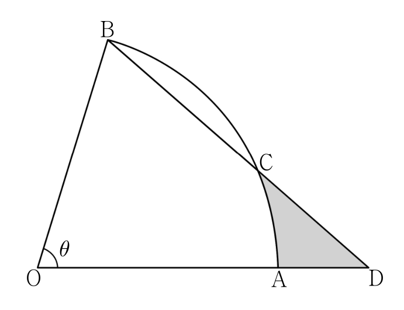

원본 (내부용)반지름의 길이가 \(6\)이고 호의 길이가 \(4\pi\)인 부채꼴의 중심각의 크기는? [2점]
① \(\frac{\pi}{6}\)② \(\frac{\pi}{3}\)③ \(\frac{\pi}{2}\)④ \(\frac{2}{3}\pi\)⑤ \(\frac{5}{6}\pi\)
원본 정답 ④
원본 풀이 (내부용)[출제의도] 부채꼴의 중심각의 크기 계산하기
부채꼴의 반지름의 길이를 \(r\), 호의 길이를 \(l\), 중심각의 크기를 \(\theta\)라 하면
\(
r=6,\quad l=4\pi
\)
이고 \(l=r\theta\)이므로
\(
\theta=\frac{4\pi}{6}=\frac{2}{3}\pi
\)
생성기 숫자판 1/6 · G2M1-02#18반지름의 길이가 $2$이고 호의 길이가 $\frac{3}{2}\pi$인 부채꼴의 중심각의 크기로 옳은 것을 고르세요.
① $\frac{\pi}{2}$② $\frac{2}{3}\pi$③ $\frac{3}{4}\pi$④ $\frac{5}{6}\pi$⑤ $\pi$
정답③ $\frac{3}{4}\pi$ 중심각의 크기를 $\theta$라 하면 $l=r\theta$이므로 $\frac{3}{2}\pi=2\theta$ $\theta=\frac{3}{4}\pi$
숫자: 원본 6 4 → 쌍둥이 2 3 2
생성기 숫자판 2/6 · G2M1-02#18반지름의 길이가 $2$이고 호의 길이가 $\frac{2}{3}\pi$인 부채꼴의 중심각의 크기로 옳은 것을 고르세요.
① $\frac{\pi}{6}$② $\frac{\pi}{4}$③ $\frac{\pi}{3}$④ $\frac{\pi}{2}$⑤ $\frac{2}{3}\pi$
정답③ $\frac{\pi}{3}$ 중심각의 크기를 $\theta$라 하면 $l=r\theta$이므로 $\frac{2}{3}\pi=2\theta$ $\theta=\frac{\pi}{3}$
숫자: 원본 6 4 → 쌍둥이 2 2 3
생성기 숫자판 3/6 · G2M1-02#18반지름의 길이가 $5$이고 호의 길이가 $\frac{25}{6}\pi$인 부채꼴의 중심각의 크기로 옳은 것을 고르세요.
① $\frac{\pi}{2}$② $\frac{2}{3}\pi$③ $\frac{3}{4}\pi$④ $\frac{5}{6}\pi$⑤ $\pi$
정답④ $\frac{5}{6}\pi$ 중심각의 크기를 $\theta$라 하면 $l=r\theta$이므로 $\frac{25}{6}\pi=5\theta$ $\theta=\frac{5}{6}\pi$
숫자: 원본 6 4 → 쌍둥이 5 25 6 · 같은 수: 6
생성기 숫자판 4/6 · G2M1-02#18반지름의 길이가 $3$이고 호의 길이가 $\frac{\pi}{2}$인 부채꼴의 중심각의 크기로 옳은 것을 고르세요.
① $\frac{\pi}{6}$② $\frac{\pi}{4}$③ $\frac{\pi}{3}$④ $\frac{\pi}{2}$⑤ $\frac{2}{3}\pi$
정답① $\frac{\pi}{6}$ 중심각의 크기를 $\theta$라 하면 $l=r\theta$이므로 $\frac{\pi}{2}=3\theta$ $\theta=\frac{\pi}{6}$
숫자: 원본 6 4 → 쌍둥이 3 2
생성기 숫자판 5/6 · G2M1-02#18반지름의 길이가 $3$이고 호의 길이가 $\frac{9}{4}\pi$인 부채꼴의 중심각의 크기로 옳은 것을 고르세요.
① $\frac{\pi}{2}$② $\frac{2}{3}\pi$③ $\frac{3}{4}\pi$④ $\frac{5}{6}\pi$⑤ $\pi$
정답③ $\frac{3}{4}\pi$ 중심각의 크기를 $\theta$라 하면 $l=r\theta$이므로 $\frac{9}{4}\pi=3\theta$ $\theta=\frac{3}{4}\pi$
숫자: 원본 6 4 → 쌍둥이 3 9 4 · 같은 수: 4
생성기 숫자판 6/6 · G2M1-02#18반지름의 길이가 $3$이고 호의 길이가 $\frac{5}{2}\pi$인 부채꼴의 중심각의 크기로 옳은 것을 고르세요.
① $\frac{\pi}{2}$② $\frac{2}{3}\pi$③ $\frac{3}{4}\pi$④ $\frac{5}{6}\pi$⑤ $\pi$
정답④ $\frac{5}{6}\pi$ 중심각의 크기를 $\theta$라 하면 $l=r\theta$이므로 $\frac{5}{2}\pi=3\theta$ $\theta=\frac{5}{6}\pi$
숫자: 원본 6 4 → 쌍둥이 3 5 2
4. 2022년 6월 4번 · 3점 · 수학Ⅰ 삼각함수 · G2M1-02#21
원본 (내부용)\(\frac{\pi}{2}<x<\frac{3}{2}\pi\)일 때, 방정식 \(\tan x=1\)의 해는? [3점]
① \(\frac{2}{3}\pi\)② \(\frac{3}{4}\pi\)③ \(\frac{5}{6}\pi\)④ \(\frac{5}{4}\pi\)⑤ \(\frac{4}{3}\pi\)
원본 정답 ④
원본 풀이 (내부용)[출제의도] 삼각함수의 그래프를 이용하여 삼각함수가 포함된 방정식 이해하기
그림에는 \(y=\tan x\)의 그래프와 직선 \(y=1\)이 나타나 있다. \(x\)축에 \(\frac{\pi}{4},\frac{\pi}{2},\pi,\frac{5\pi}{4},\frac{3\pi}{2}\)가 표시되어 있고, \(y=1\)과 그래프의 교점 위치가 점선으로 표시되어 있다.
방정식 \(\tan x=1\)의 해는 함수 \(y=\tan x\)의 그래프와 직선 \(y=1\)이 만나는 점의 \(x\)좌표와 같다.
\(
\tan\frac{\pi}{4}=1
\)
이고 함수 \(y=\tan x\)의 주기가 \(\pi\)이므로 구하는 해는
\(
x=\frac54\pi
\)
생성기 숫자판 1/6 · G2M1-02#21$\pi<x<2\pi$일 때, 방정식 $\tan x=\sqrt{3}$의 해로 옳은 것을 고르세요.
① $\frac{7}{6}\pi$② $\frac{5}{4}\pi$③ $\frac{4}{3}\pi$④ $\frac{3}{2}\pi$⑤ $\frac{5}{3}\pi$
원본 (내부용)\(-3\le x\le-1\)에서 함수 \(f(x)=2^{-x}+5\)의 최솟값은? [3점]
① \(6\)② \(7\)③ \(8\)④ \(9\)⑤ \(10\)
원본 정답 ②
원본 풀이 (내부용)[출제의도] 지수함수의 그래프 이해하기
함수
\(
f(x)=2^{-x}+5=\left(\frac12\right)^x+5
\)
의 밑이 1보다 작으므로 \(x\)의 값이 증가하면 \(f(x)\)의 값이 감소한다.
따라서 함수 \(f(x)\)는 \(x=-1\)에서 최솟값을 가지고 최솟값은
\(
f(-1)=2^1+5=7
\)
생성기 숫자판 1/6 · G2M1-04#3$-2\le x\le -1$에서 함수 $f\left(x\right)=3^{-x}-1$의 최댓값으로 옳은 것을 고르세요.
① $8$② $9$③ $10$④ $11$⑤ $17$
정답① $8$ 밑 $3$이 $1$보다 크고 지수 $-x$는 $x$가 커질수록 작아지므로 함수 $f\left(x\right)$는 $x$의 값이 커질수록 작아집니다. 따라서 $x=-2$일 때 최댓값을 가지므로 $f\left(-2\right)=3^{2}-1$ $=9-1$ $=8$
숫자: 원본 3 1 2 5 → 쌍둥이 2 1 3 1 · 같은 수: 1 2 3
생성기 숫자판 2/6 · G2M1-04#3$-1\le x\le 2$에서 함수 $f\left(x\right)=\left(\frac{1}{2}\right)^{x+1}+4$의 최댓값으로 옳은 것을 고르세요.
① $\frac{33}{8}$② $5$③ $6$④ $7$⑤ $8$
정답② $5$ 밑 $\frac{1}{2}$이 $0$과 $1$ 사이이고 지수 $x+1$은 $x$가 커질수록 커지므로 함수 $f\left(x\right)$는 $x$의 값이 커질수록 작아집니다. 따라서 $x=-1$일 때 최댓값을 가지므로 $f\left(-1\right)=\left(\frac{1}{2}\right)^{0}+4$ $=1+4$ $=5$
숫자: 원본 3 1 2 5 → 쌍둥이 1 2 1 2 1 4 · 같은 수: 1 2
생성기 숫자판 3/6 · G2M1-04#3$0\le x\le 3$에서 함수 $f\left(x\right)=5^{-x}+4$의 최댓값으로 옳은 것을 고르세요.
① $4$② $\frac{501}{125}$③ $5$④ $6$⑤ $7$
정답③ $5$ 밑 $5$가 $1$보다 크고 지수 $-x$는 $x$가 커질수록 작아지므로 함수 $f\left(x\right)$는 $x$의 값이 커질수록 작아집니다. 따라서 $x=0$일 때 최댓값을 가지므로 $f\left(0\right)=5^{0}+4$ $=1+4$ $=5$
숫자: 원본 3 1 2 5 → 쌍둥이 0 3 5 4 · 같은 수: 3 5
생성기 숫자판 4/6 · G2M1-04#3$-3\le x\le -2$에서 함수 $f\left(x\right)=2^{x+4}+1$의 최솟값으로 옳은 것을 고르세요.
① $1$② $2$③ $3$④ $4$⑤ $5$
정답③ $3$ 밑 $2$가 $1$보다 크고 지수 $x+4$는 $x$가 커질수록 커지므로 함수 $f\left(x\right)$는 $x$의 값이 커질수록 커집니다. 따라서 $x=-3$일 때 최솟값을 가지므로 $f\left(-3\right)=2^{1}+1$ $=2+1$ $=3$
숫자: 원본 3 1 2 5 → 쌍둥이 3 2 2 4 1 · 같은 수: 1 2 3
생성기 숫자판 5/6 · G2M1-04#3$2\le x\le 6$에서 함수 $f\left(x\right)=\left(\frac{1}{3}\right)^{x-5}-3$의 최댓값으로 옳은 것을 고르세요.
① $24$② $25$③ $26$④ $27$⑤ $51$
정답① $24$ 밑 $\frac{1}{3}$이 $0$과 $1$ 사이이고 지수 $x-5$는 $x$가 커질수록 커지므로 함수 $f\left(x\right)$는 $x$의 값이 커질수록 작아집니다. 따라서 $x=2$일 때 최댓값을 가지므로 $f\left(2\right)=\left(\frac{1}{3}\right)^{-3}-3$ $=27-3$ $=24$
숫자: 원본 3 1 2 5 → 쌍둥이 2 6 1 3 5 3 · 같은 수: 1 2 3 5
생성기 숫자판 6/6 · G2M1-04#3$2\le x\le 5$에서 함수 $f\left(x\right)=\left(\frac{1}{5}\right)^{x-3}$의 최댓값으로 옳은 것을 고르세요.
① $\frac{1}{25}$② $2$③ $3$④ $4$⑤ $5$
정답⑤ $5$ 밑 $\frac{1}{5}$이 $0$과 $1$ 사이이고 지수 $x-3$은 $x$가 커질수록 커지므로 함수 $f\left(x\right)$는 $x$의 값이 커질수록 작아집니다. 따라서 $x=2$일 때 최댓값을 가지므로 $f\left(2\right)=\left(\frac{1}{5}\right)^{-1}$ $=5$
숫자: 원본 3 1 2 5 → 쌍둥이 2 5 1 5 3 · 같은 수: 1 2 3 5
7. 2022년 6월 7번 · 3점 · 수학Ⅰ 지수·로그 · G2M10-03#3
원본 (내부용)함수 \(y=\log_3 x\)의 그래프를 \(x\)축의 방향으로 \(2\)만큼, \(y\)축의 방향으로 \(5\)만큼 평행이동한 그래프가 점 \((5,a)\)를 지날 때, 상수 \(a\)의 값은? [3점]
① \(6\)② \(7\)③ \(8\)④ \(9\)⑤ \(10\)
원본 정답 ①
원본 풀이 (내부용)[출제의도] 로그함수의 그래프 이해하기
함수 \(y=\log_3x\)의 그래프를 \(x\)축의 방향으로 2만큼, \(y\)축의 방향으로 5만큼 평행이동한 그래프를 나타내는 함수는
\(
y=\log_3(x-2)+5
\)
이다.
이 함수의 그래프가 점 \((5,a)\)를 지나므로
\(
a=\log_3(5-2)+5
\)
에서 \(a=1+5\)이다. 따라서 \(a=6\).
생성기 숫자판 1/6 · G2M10-03#3함수 $y=\log_{7}x$의 그래프를 $x$축의 방향으로 $7$만큼, $y$축의 방향으로 $9$만큼 평행이동한 그래프가 점 $\left(56,\ a\right)$를 지날 때, 상수 $a$의 값으로 옳은 것을 고르세요.
생성기 숫자판 6/6 · G2M1-02#5$\frac{\pi}{2}<\theta<\pi$인 $\theta$에 대하여 $\cos\theta=-\frac{5}{13}$일 때, $\tan\theta$의 값으로 옳은 것을 고르세요.
① $-\frac{24}{5}$② $-\frac{12}{5}$③ $-\frac{5}{12}$④ $\frac{5}{12}$⑤ $\frac{12}{5}$
정답② $-\frac{12}{5}$ $\sin^{2}\theta=1-\cos^{2}\theta=1-\frac{25}{169}=\frac{144}{169}$ $\frac{\pi}{2}<\theta<\pi$에서 $\sin\theta>0$이므로 $\sin\theta=\frac{12}{13}$ 따라서 $\tan\theta=\frac{\sin\theta}{\cos\theta}=-\frac{12}{5}$
숫자: 원본 2 2 3 → 쌍둥이 2 5 13 · 같은 수: 2
9. 2022년 6월 9번 · 3점 · 수학Ⅰ 지수·로그 · G2M1-04#12
원본 (내부용)두 상수 \(a,b\)에 대하여 함수 \(y=3^x+a\)의 그래프가 점 \((2,b)\)를 지나고 점근선이 직선 \(y=5\)일 때, \(a+b\)의 값은? [3점]
① \(15\)② \(16\)③ \(17\)④ \(18\)⑤ \(19\)
원본 정답 ⑤
원본 풀이 (내부용)[출제의도] 지수함수의 그래프 이해하기
함수 \(y=3^x+a\)의 그래프가 점 \((2,b)\)를 지나므로
\(
b=3^2+a
\)
이다.
함수 \(y=3^x+a\)의 그래프의 점근선이 \(y=a\)이므로 \(a=5\)이고, \(b=9+5=14\)이다.
따라서 \(a+b=19\)
생성기 숫자판 1/6 · G2M1-04#12두 상수 $a$, $b$에 대하여 함수 $y=2^{x}+a$의 그래프가 점 $\left(1,\ b\right)$를 지나고 점근선이 직선 $y=-2$일 때, $a+b$의 값으로 옳은 것을 고르세요.
① $-5$② $-4$③ $-3$④ $-2$⑤ $-1$
정답④ $-2$ 함수 $y=2^{x}+a$의 그래프의 점근선은 직선 $y=a$이므로 $a=-2$ 점 $\left(1,\ b\right)$를 지나므로 $b=2^{1}-2=0$ 따라서 $a+b=-2+0=-2$
숫자: 원본 3 2 5 → 쌍둥이 2 1 2 · 같은 수: 2
생성기 숫자판 2/6 · G2M1-04#12두 상수 $a$, $b$에 대하여 함수 $y=3^{x}+a$의 그래프가 점 $\left(1,\ b\right)$를 지나고 점근선이 직선 $y=3$일 때, $a+b$의 값으로 옳은 것을 고르세요.
① $9$② $10$③ $11$④ $12$⑤ $13$
정답① $9$ 함수 $y=3^{x}+a$의 그래프의 점근선은 직선 $y=a$이므로 $a=3$ 점 $\left(1,\ b\right)$를 지나므로 $b=3^{1}+3=6$ 따라서 $a+b=3+6=9$
숫자: 원본 3 2 5 → 쌍둥이 3 1 3 · 같은 수: 3
생성기 숫자판 3/6 · G2M1-04#12두 상수 $a$, $b$에 대하여 함수 $y=2^{x}+a$의 그래프가 점 $\left(4,\ b\right)$를 지나고 점근선이 직선 $y=-3$일 때, $a+b$의 값으로 옳은 것을 고르세요.
① $8$② $9$③ $10$④ $11$⑤ $12$
정답③ $10$ 함수 $y=2^{x}+a$의 그래프의 점근선은 직선 $y=a$이므로 $a=-3$ 점 $\left(4,\ b\right)$를 지나므로 $b=2^{4}-3=13$ 따라서 $a+b=-3+13=10$
숫자: 원본 3 2 5 → 쌍둥이 2 4 3 · 같은 수: 2 3
생성기 숫자판 4/6 · G2M1-04#12두 상수 $a$, $b$에 대하여 함수 $y=3^{x}+a$의 그래프가 점 $\left(3,\ b\right)$를 지나고 점근선이 직선 $y=-4$일 때, $a+b$의 값으로 옳은 것을 고르세요.
① $15$② $16$③ $17$④ $18$⑤ $19$
정답⑤ $19$ 함수 $y=3^{x}+a$의 그래프의 점근선은 직선 $y=a$이므로 $a=-4$ 점 $\left(3,\ b\right)$를 지나므로 $b=3^{3}-4=23$ 따라서 $a+b=-4+23=19$
숫자: 원본 3 2 5 → 쌍둥이 3 3 4 · 같은 수: 3
생성기 숫자판 5/6 · G2M1-04#12두 상수 $a$, $b$에 대하여 함수 $y=3^{x}+a$의 그래프가 점 $\left(2,\ b\right)$를 지나고 점근선이 직선 $y=7$일 때, $a+b$의 값으로 옳은 것을 고르세요.
① $23$② $24$③ $25$④ $26$⑤ $27$
정답① $23$ 함수 $y=3^{x}+a$의 그래프의 점근선은 직선 $y=a$이므로 $a=7$ 점 $\left(2,\ b\right)$를 지나므로 $b=3^{2}+7=16$ 따라서 $a+b=7+16=23$
숫자: 원본 3 2 5 → 쌍둥이 3 2 7 · 같은 수: 2 3
생성기 숫자판 6/6 · G2M1-04#12두 상수 $a$, $b$에 대하여 함수 $y=2^{x}+a$의 그래프가 점 $\left(2,\ b\right)$를 지나고 점근선이 직선 $y=7$일 때, $a+b$의 값으로 옳은 것을 고르세요.
① $16$② $17$③ $18$④ $19$⑤ $20$
정답③ $18$ 함수 $y=2^{x}+a$의 그래프의 점근선은 직선 $y=a$이므로 $a=7$ 점 $\left(2,\ b\right)$를 지나므로 $b=2^{2}+7=11$ 따라서 $a+b=7+11=18$
숫자: 원본 3 2 5 → 쌍둥이 2 2 7 · 같은 수: 2
10. 2022년 6월 10번 · 3점 · 수학Ⅰ 삼각함수 · G2f-11#0
원본 (내부용)세 상수 \(a,b,c\)에 대하여 함수 \(y=a\cos bx+c\)의 그래프가 그림과 같을 때, \(a\times b\times c\)의 값은? (단, \(a>0,\ b>0\)) [3점]
① \(-10\)② \(-8\)③ \(-6\)④ \(-4\)⑤ \(-2\)
원본 정답 ③
원본 풀이 (내부용)[출제의도] 삼각함수의 그래프 이해하기
주어진 삼각함수
\(
y=a\cos bx+c\quad(a>0,\ b>0)
\)
의 최댓값이 \(a+c\), 최솟값이 \(-a+c\)이므로
\(
a+c=1,\quad -a+c=-3
\)
에서 \(a=2,\ c=-1\)이다.
한편, 주어진 그래프에서 삼각함수의 주기가 \(\frac23\pi\)이므로
\(
\frac{2\pi}{b}=\frac23\pi
\)
즉, \(b=3\)이다.
따라서 \(a\times b\times c=-6\)
생성기 숫자판 1/6 · G2f-11#0세 상수 $a$, $b$, $c$에 대하여 함수 $y=a\cos bx+c$의 그래프가 그림과 같을 때, 주기는 $2\pi/5$, 최솟값은 $-5$, 최댓값은 $1$이다. $a\times b\times c$의 값으로 옳은 것을 고르세요. (단, $a>0$, $b>0$)
① $-32$② $-31$③ $-30$④ $-29$⑤ $-28$
정답③ $-30$ 그래프에서 최댓값이 $1$, 최솟값이 $-5$이고 $a>0$이므로 $a+c=1$, $-a+c=-5$ 두 식을 연립하면 $a=3$, $c=-2$ $x=0$에서 최대이고 다음 최대가 $x=\frac{2\pi}{5}$이므로 주기는 $\frac{2\pi}{5}$ $b>0$이므로 $\frac{2\pi}{b}=\frac{2\pi}{5}$에서 $b=5$ 따라서 $a\times b\times c=3\times 5\times \left(-2\right)=-30$
원본 풀이 (내부용)[출제의도] 지수함수가 포함된 방정식 이해하기
\(
(2^x)^2-8\times2^x+15=0
\)
에서 \(2^x=t\)로 놓으면 \(t>0\)이고 주어진 방정식은
\(
t^2-8t+15=0
\)
이다.
\(
(t-3)(t-5)=0
\)
에서 \(t=3\) 또는 \(t=5\)이다. …… ㉠
㉠에 의하여 \(2^x=3\) 또는 \(2^x=5\)이다.
\(\alpha<\beta\)이므로 \(2^\alpha=3\)이고 \(2^\beta=5\)이다.
따라서 \(\beta=\log_2 5\)이므로
\(
2^\alpha\times\beta=3\log_2 5
\)
생성기 숫자판 1/6 · G2M1-01b#12방정식 $4^{x}-2^{x+4}+63=0$의 두 실근을 $\alpha$, $\beta\ \left(\alpha<\beta\right)$라 할 때, $2^{\beta}\times\alpha$의 값으로 옳은 것을 고르세요.
① $8\log_{2}7$② $9\log_{2}7$③ $10\log_{2}7$④ $9\log_{2}9$⑤ $11\log_{2}7$
정답② $9\log_{2}7$ $2^{x}=t\ \left(t>0\right)$라 하면 $t^{2}-16t+63=0$ $\left(t-7\right)\left(t-9\right)=0$이므로 $t=7$ 또는 $t=9$ $\alpha<\beta$이므로 $2^{\alpha}=7$, $2^{\beta}=9$, 즉 $\alpha=\log_{2}7$, $\beta=\log_{2}9$ 따라서 $2^{\beta}\times\alpha=9\log_{2}7$
생성기 숫자판 2/6 · G2M1-01b#12방정식 $4^{x}-2^{x+4}+39=0$의 두 실근을 $\alpha$, $\beta\ \left(\alpha<\beta\right)$라 할 때, $2^{\alpha}\times\beta$의 값으로 옳은 것을 고르세요.
① $4\log_{2}13$② $3\log_{2}3$③ $5\log_{2}13$④ $2\log_{2}13$⑤ $3\log_{2}13$
정답⑤ $3\log_{2}13$ $2^{x}=t\ \left(t>0\right)$라 하면 $t^{2}-16t+39=0$ $\left(t-3\right)\left(t-13\right)=0$이므로 $t=3$ 또는 $t=13$ $\alpha<\beta$이므로 $2^{\alpha}=3$, $2^{\beta}=13$, 즉 $\alpha=\log_{2}3$, $\beta=\log_{2}13$ 따라서 $2^{\alpha}\times\beta=3\log_{2}13$
생성기 숫자판 3/6 · G2M1-01b#12방정식 $4^{x}-2^{x+4}+55=0$의 두 실근을 $\alpha$, $\beta\ \left(\alpha<\beta\right)$라 할 때, $2^{\beta}\times\alpha$의 값으로 옳은 것을 고르세요.
① $13\log_{2}5$② $10\log_{2}5$③ $11\log_{2}11$④ $11\log_{2}5$⑤ $12\log_{2}5$
정답④ $11\log_{2}5$ $2^{x}=t\ \left(t>0\right)$라 하면 $t^{2}-16t+55=0$ $\left(t-5\right)\left(t-11\right)=0$이므로 $t=5$ 또는 $t=11$ $\alpha<\beta$이므로 $2^{\alpha}=5$, $2^{\beta}=11$, 즉 $\alpha=\log_{2}5$, $\beta=\log_{2}11$ 따라서 $2^{\beta}\times\alpha=11\log_{2}5$
생성기 숫자판 4/6 · G2M1-01b#12방정식 $4^{x}-2^{x+4}+63=0$의 두 실근을 $\alpha$, $\beta\ \left(\alpha<\beta\right)$라 할 때, $2^{\alpha}\times\beta$의 값으로 옳은 것을 고르세요.
① $6\log_{2}9$② $7\log_{2}7$③ $7\log_{2}9$④ $8\log_{2}9$⑤ $9\log_{2}9$
정답③ $7\log_{2}9$ $2^{x}=t\ \left(t>0\right)$라 하면 $t^{2}-16t+63=0$ $\left(t-7\right)\left(t-9\right)=0$이므로 $t=7$ 또는 $t=9$ $\alpha<\beta$이므로 $2^{\alpha}=7$, $2^{\beta}=9$, 즉 $\alpha=\log_{2}7$, $\beta=\log_{2}9$ 따라서 $2^{\alpha}\times\beta=7\log_{2}9$
생성기 숫자판 5/6 · G2M1-01b#12방정식 $4^{x}-2^{x+4}+55=0$의 두 실근을 $\alpha$, $\beta\ \left(\alpha<\beta\right)$라 할 때, $2^{\alpha}\times\beta$의 값으로 옳은 것을 고르세요.
① $7\log_{2}11$② $4\log_{2}11$③ $6\log_{2}11$④ $5\log_{2}11$⑤ $5\log_{2}5$
정답④ $5\log_{2}11$ $2^{x}=t\ \left(t>0\right)$라 하면 $t^{2}-16t+55=0$ $\left(t-5\right)\left(t-11\right)=0$이므로 $t=5$ 또는 $t=11$ $\alpha<\beta$이므로 $2^{\alpha}=5$, $2^{\beta}=11$, 즉 $\alpha=\log_{2}5$, $\beta=\log_{2}11$ 따라서 $2^{\alpha}\times\beta=5\log_{2}11$
생성기 숫자판 6/6 · G2M1-01b#12방정식 $4^{x}-9\times 2^{x}+20=0$의 두 실근을 $\alpha$, $\beta\ \left(\alpha<\beta\right)$라 할 때, $2^{\alpha}\times\beta$의 값으로 옳은 것을 고르세요.
① $4\log_{2}5$② $5\log_{2}5$③ $6\log_{2}5$④ $3\log_{2}5$⑤ $4\log_{2}6$
정답① $4\log_{2}5$ $2^{x}=t\ \left(t>0\right)$라 하면 $t^{2}-9t+20=0$ $\left(t-4\right)\left(t-5\right)=0$이므로 $t=4$ 또는 $t=5$ $\alpha<\beta$이므로 $2^{\alpha}=4$, $2^{\beta}=5$, 즉 $\alpha=\log_{2}4$, $\beta=\log_{2}5$ 따라서 $2^{\alpha}\times\beta=4\log_{2}5$
원본 (내부용)함수 \(y=3^x\)의 그래프 위의 \(x\)좌표가 양수인 점 \(A\)와 함수 \(y=\left(\frac{1}{3}\right)^x-6\)의 그래프 위의 점 \(B\)에 대하여 선분 \(AB\)의 중점의 좌표가 \((0,2)\)일 때, 점 \(A\)의 \(y\)좌표는? [4점]
① \(4\)② \(\frac{9}{2}\)③ \(5\)④ \(\frac{11}{2}\)⑤ \(6\)
원본 정답 ③
원본 풀이 (내부용)[출제의도] 지수함수의 그래프 이해하기
점 A의 좌표를 \((x_1,y_1)\), 점 B의 좌표를 \((x_2,y_2)\)라 할 때 선분 \(AB\)의 중점이 \((0,2)\)이므로
\(
\frac{x_1+x_2}{2}=0,\quad \frac{y_1+y_2}{2}=2
\)
즉 \(x_1+x_2=0\)이고 \(y_1+y_2=4\)이다.
\(x_2=-x_1\)이므로
\(
3^{x_1}+\left(\frac13\right)^{-x_1}-6=4
\)
따라서 \(2\times3^{x_1}=10\)이고 점 A의 \(y\)좌표 \(y_1\)은
\(
y_1=3^{x_1}=5
\)
쌍둥이 1/5 · 4점 쌍둥이함수 $y=4^{x}$의 그래프 위의 $x$좌표가 양수인 점 $\mathrm{A}$와 함수 $y=\left(\frac{1}{4}\right)^{x}-3$의 그래프 위의 점 $\mathrm{B}$에 대하여 선분 $\mathrm{AB}$의 중점의 좌표가 $\left(0,\ \frac{3}{2}\right)$일 때, 점 $\mathrm{A}$의 $y$좌표로 옳은 것을 고르세요.
① $1$② $\frac{3}{2}$③ $2$④ $\frac{5}{2}$⑤ $3$
정답⑤ $3$ $\mathrm{A}\left(a,\ 4^{a}\right)$라 하면 중점의 $x$좌표가 $0$이므로 점 $\mathrm{B}$의 $x$좌표는 $-a$이고 $\mathrm{B}\left(-a,\ 4^{a}-3\right)$ 중점의 $y$좌표는 $\frac{4^{a}+4^{a}-3}{2}=\frac{3}{2}$이므로 $2\times 4^{a}=6$ 점 $\mathrm{A}$의 $y$좌표는 $4^{a}=3$
쌍둥이 2/5 · 4점 쌍둥이함수 $y=2^{x}$의 그래프 위의 $x$좌표가 양수인 점 $\mathrm{A}$와 함수 $y=\left(\frac{1}{2}\right)^{x}+1$의 그래프 위의 점 $\mathrm{B}$에 대하여 선분 $\mathrm{AB}$의 중점의 좌표가 $\left(0,\ 4\right)$일 때, 점 $\mathrm{A}$의 $y$좌표로 옳은 것을 고르세요.
① $3$② $\frac{7}{2}$③ $4$④ $\frac{9}{2}$⑤ $5$
정답② $\frac{7}{2}$ $\mathrm{A}\left(a,\ 2^{a}\right)$라 하면 중점의 $x$좌표가 $0$이므로 점 $\mathrm{B}$의 $x$좌표는 $-a$이고 $\mathrm{B}\left(-a,\ 2^{a}+1\right)$ 중점의 $y$좌표는 $\frac{2^{a}+2^{a}+1}{2}=4$이므로 $2\times 2^{a}=7$ 점 $\mathrm{A}$의 $y$좌표는 $2^{a}=\frac{7}{2}$
쌍둥이 3/5 · 4점 쌍둥이함수 $y=5^{x}$의 그래프 위의 $x$좌표가 양수인 점 $\mathrm{A}$와 함수 $y=\left(\frac{1}{5}\right)^{x}-8$의 그래프 위의 점 $\mathrm{B}$에 대하여 선분 $\mathrm{AB}$의 중점의 좌표가 $\left(0,\ 2\right)$일 때, 점 $\mathrm{A}$의 $y$좌표로 옳은 것을 고르세요.
① $6$② $\frac{13}{2}$③ $7$④ $\frac{15}{2}$⑤ $8$
정답① $6$ $\mathrm{A}\left(a,\ 5^{a}\right)$라 하면 중점의 $x$좌표가 $0$이므로 점 $\mathrm{B}$의 $x$좌표는 $-a$이고 $\mathrm{B}\left(-a,\ 5^{a}-8\right)$ 중점의 $y$좌표는 $\frac{5^{a}+5^{a}-8}{2}=2$이므로 $2\times 5^{a}=12$ 점 $\mathrm{A}$의 $y$좌표는 $5^{a}=6$
쌍둥이 4/5 · 4점 쌍둥이함수 $y=3^x$의 그래프 위에서 $x$좌표가 양수인 점 $A$와 함수 $y=\left(\frac13\right)^x+4$의 그래프 위의 점 $B$에 대하여 선분 $AB$의 중점의 좌표가 $(0,11)$일 때, 점 $A$의 $x$좌표를 구하세요.
쌍둥이 5/5 · 4점 쌍둥이함수 $y=5^x$의 그래프 위에서 $x$좌표가 양수인 점 $A$와 함수 $y=\left(\frac15\right)^x+8$의 그래프 위의 점 $B$에 대하여 선분 $AB$의 중점의 좌표가 $(0,9)$일 때, 점 $A$의 $x$좌표를 구하세요.
원본 (내부용)좌표평면 위의 원점 \(O\)에서 \(x\)축의 양의 방향으로 시초선을 잡을 때, 원점 \(O\)와 점 \(P(5,a)\)를 지나는 동경 \(OP\)가 나타내는 각의 크기를 \(\theta\), 선분 \(OP\)의 길이를 \(r\)라 하자. \(\sin\theta+2\cos\theta=1\)일 때, \(a+r\)의 값은? (단, \(a\)는 상수이다.) [4점]
① \(\frac{5}{2}\)② \(3\)③ \(\frac{7}{2}\)④ \(4\)⑤ \(\frac{9}{2}\)
원본 정답 ①
원본 풀이 (내부용)[출제의도] 삼각함수의 정의를 이용하여 식의 값 구하는 문제 해결하기
동경 \(OP\)가 나타내는 각의 크기가 \(\theta\)이고 \(\overline{OP}=r\)이므로
\(
\sin\theta=\frac ar,\quad \cos\theta=\frac5r
\)
이다.
\(
\sin\theta+2\cos\theta=1
\)
에서
\(
\frac ar+\frac{10}{r}=1
\)
즉 \(r=a+10\)이다. …… ㉠
\(
\sin^2\theta+\cos^2\theta=1
\)
에서
\(
\left(\frac ar\right)^2+\left(\frac5r\right)^2=1
\)
이므로
\(
a^2+25=r^2
\)
이다. …… ㉡
㉠, ㉡에 의하여 \(a=-\frac{15}{4}\)이고 \(r=\frac{25}{4}\)이다.
따라서
\(
a+r=\frac52
\)
쌍둥이 1/5 · 4점 쌍둥이좌표평면에서 원점 $O$와 점 $P(4,a)$를 지나는 동경 $OP$가 나타내는 각의 크기를 $\theta$, 선분 $OP$의 길이를 $r$라 합니다. $\sin\theta+5\cos\theta=1$일 때, $\cos\theta$의 값은? (단, $a$는 상수입니다.)
① $\frac3{5}$② $\frac4{5}$③ $\frac5{13}$④ $\frac{12}{13}$⑤ $\frac{13}{5}$
정답③ $\frac5{13}$ $\sin\theta=\frac ar$, $\cos\theta=\frac4r$이므로 $\frac{a+20}{r}=1$, 즉 $r=a+20$이다. $r^2=a^2+16$이므로 $(a+20)^2=a^2+16$에서 $40a+384=0$, 따라서 $a=-\frac{48}{5}$이고 $r=\frac{52}{5}$이다. 따라서 $\cos\theta=\frac4r=\frac5{13}$이다.
숫자: 원본 5 2 1 → 쌍둥이 4 5 1 · 같은 수: 1 5
쌍둥이 2/5 · 4점 쌍둥이좌표평면 위의 원점 $O$에서 $x$축의 양의 방향으로 시초선을 잡을 때, 원점 $O$와 점 $P(6,\ a)$를 지나는 동경 $OP$가 나타내는 각의 크기를 $\theta$, 선분 $OP$의 길이를 $r$라 합니다. $\sin\theta+3\cos\theta=1$일 때, $a+r$의 값으로 옳은 것을 고르세요. (단, $a$는 상수입니다.)
쌍둥이 3/5 · 4점 쌍둥이좌표평면 위의 원점 $O$에서 $x$축의 양의 방향으로 시초선을 잡을 때, 원점 $O$와 점 $P(3,\ a)$를 지나는 동경 $OP$가 나타내는 각의 크기를 $\theta$, 선분 $OP$의 길이를 $r$라 합니다. $\sin\theta+4\cos\theta=1$일 때, $a+r$의 값으로 옳은 것을 고르세요. (단, $a$는 상수입니다.)
① $\frac{1}{2}$② $\frac{3}{4}$③ $1$④ $\frac{5}{4}$⑤ $\frac{3}{2}$
쌍둥이 4/5 · 4점 쌍둥이좌표평면 위의 원점 $O$에서 $x$축의 양의 방향으로 시초선을 잡을 때, 원점 $O$와 점 $P(8,\ a)$를 지나는 동경 $OP$가 나타내는 각의 크기를 $\theta$, 선분 $OP$의 길이를 $r$라 합니다. $\sin\theta+3\cos\theta=1$일 때, $a+r$의 값으로 옳은 것을 고르세요. (단, $a$는 상수입니다.)
① $2$② $\frac{7}{3}$③ $\frac{8}{3}$④ $3$⑤ $\frac{10}{3}$
쌍둥이 5/5 · 4점 쌍둥이좌표평면에서 원점 $O$와 점 $P(7,a)$를 지나는 동경 $OP$가 나타내는 각의 크기를 $\theta$, 선분 $OP$의 길이를 $r$라 합니다. $\sin\theta+2\cos\theta=1$일 때, $\cos\theta$의 값은? (단, $a$는 상수입니다.)
① $\frac35$② $\frac45$③ $\frac5{13}$④ $\frac{12}{13}$⑤ $\frac{13}{5}$
정답② $\frac45$ $\sin\theta=\frac ar$, $\cos\theta=\frac7r$이므로 $\frac{a+14}{r}=1$, 즉 $r=a+14$이다. 또한 $r^2=a^2+49$이므로 $(a+14)^2=a^2+49$에서 $28a+147=0$, 따라서 $a=-\frac{21}{4}$이고 $r=\frac{35}{4}$이다. 따라서 $\cos\theta=\frac7r=\frac45$이다.
숫자: 원본 5 2 1 → 쌍둥이 7 2 1 · 같은 수: 1 2
16. 2022년 6월 16번 · 4점 · 수학Ⅰ 삼각함수 · 4점 쌍둥이
원본 (내부용)그림과 같이 반지름의 길이가 \(2\)이고 중심각의 크기가 \(\frac{\pi}{2}\)인 부채꼴 \(OAB\)가 있다. 호 \(AB\) 위에 점 \(C\)를 \(\overline{AC}=1\)이 되도록 잡는다. 선분 \(OC\) 위의 점 \(O\)가 아닌 점 \(D\)에 대하여 삼각형 \(BOD\)의 넓이가 \(\frac{7}{6}\)일 때, 선분 \(OD\)의 길이는? [4점]
① \(\frac{5}{4}\)② \(\frac{31}{24}\)③ \(\frac{4}{3}\)④ \(\frac{11}{8}\)⑤ \(\frac{17}{12}\)
원본 정답 ③
원본 풀이 (내부용)[출제의도] 코사인법칙을 이용하여 선분의 길이 구하는 문제 해결하기
\(\angle COA=\theta\)라 하면 삼각형 COA에서 코사인법칙에 의하여
\(
\cos\theta=\frac{2^2+2^2-1^2}{2\times2\times2}=\frac78
\)
이다.
삼각형 BOD에서
\(
\angle BOD=\frac{\pi}{2}-\theta
\)
이고 삼각형 BOD의 넓이가 \(\frac76\)이므로 \(\overline{OD}=x\)라 놓으면
\(
\frac12\times2\times x\times\sin\left(\frac{\pi}{2}-\theta\right)=\frac76
\)
이다.
한편,
\(
\sin\left(\frac{\pi}{2}-\theta\right)=\cos\theta=\frac78
\)
이므로
\(
\frac78x=\frac76,\quad x=\frac43
\)
이다. 따라서 \(\overline{OD}=\frac43\)
쌍둥이 1/5 · 4점 쌍둥이반지름 12, 중심각 π/2인 부채꼴 OAB에서 호 AB 위 C를 호 길이 AC=2π가 되도록 잡습니다. D는 OC 위의 점이고 △BOD의 넓이가 $6\sqrt3$일 때 OD는?
① $1$② $\frac32$③ $2$④ $\frac52$⑤ $3$
정답③ $2$ ∠AOC=(2π)/12=π/6이므로 ∠BOD=π/3이다. 삼각형 넓이는 (1/2)·12·OD·sin(π/3)=3√3·OD이다. 3√3·OD=6√3에서 OD=2이다.
쌍둥이 2/5 · 4점 쌍둥이반지름의 길이가 $3$이고 중심각의 크기가 $\frac{\pi}{2}$인 부채꼴 $OAB$가 있습니다. 호 $AB$ 위에 점 $C$를 $\overline{AC}=2$가 되도록 잡습니다. 선분 $OC$ 위의 점 $O$가 아닌 점 $D$에 대하여 삼각형 $BOD$의 넓이가 $\frac{7}{4}$일 때, 선분 $OD$의 길이로 옳은 것을 고르세요.
① $\frac{3}{2}$② $2$③ $\frac{5}{2}$④ $3$⑤ $\frac{7}{2}$
정답① $\frac{3}{2}$ $\angle AOC=\alpha$라 하면 삼각형 $OAC$에서 코사인법칙으로 $4=9+9-2\times3\times3\cos\alpha$, $\cos\alpha=\frac{7}{9}$ $\angle BOD=\frac{\pi}{2}-\alpha$이므로 삼각형 $BOD$의 넓이는 $\frac{1}{2}\times3\times\overline{OD}\times\sin\left(\frac{\pi}{2}-\alpha\right)=\frac{3}{2}\times\frac{7}{9}\times\overline{OD}$ $\frac{7}{6}\,\overline{OD}=\frac{7}{4}$에서 $\overline{OD}=\frac{3}{2}$
쌍둥이 3/5 · 4점 쌍둥이반지름의 길이가 $5$이고 중심각의 크기가 $\frac{\pi}{2}$인 부채꼴 $OAB$가 있습니다. 호 $AB$ 위에 점 $C$를 $\overline{AC}=2$가 되도록 잡습니다. 선분 $OC$ 위의 점 $O$가 아닌 점 $D$에 대하여 삼각형 $BOD$의 넓이가 $\frac{23}{4}$일 때, 선분 $OD$의 길이로 옳은 것을 고르세요.
① $\frac{1}{2}$② $1$③ $\frac{3}{2}$④ $2$⑤ $\frac{5}{2}$
정답⑤ $\frac{5}{2}$ $\angle AOC=\alpha$라 하면 삼각형 $OAC$에서 코사인법칙으로 $4=25+25-2\times5\times5\cos\alpha$, $\cos\alpha=\frac{23}{25}$ $\angle BOD=\frac{\pi}{2}-\alpha$이므로 삼각형 $BOD$의 넓이는 $\frac{1}{2}\times5\times\overline{OD}\times\sin\left(\frac{\pi}{2}-\alpha\right)=\frac{5}{2}\times\frac{23}{25}\times\overline{OD}$ $\frac{23}{10}\,\overline{OD}=\frac{23}{4}$에서 $\overline{OD}=\frac{5}{2}$
쌍둥이 4/5 · 4점 쌍둥이반지름의 길이가 $4$이고 중심각의 크기가 $\frac{\pi}{2}$인 부채꼴 $OAB$가 있습니다. 호 $AB$ 위에 점 $C$를 $\overline{AC}=3$이 되도록 잡습니다. 선분 $OC$ 위의 점 $O$가 아닌 점 $D$에 대하여 삼각형 $BOD$의 넓이가 $\frac{23}{8}$일 때, 선분 $OD$의 길이로 옳은 것을 고르세요.
① $2$② $3$③ $4$④ $5$⑤ $6$
정답① $2$ $\angle AOC=\alpha$라 하면 삼각형 $OAC$에서 코사인법칙으로 $9=16+16-2\times4\times4\cos\alpha$, $\cos\alpha=\frac{23}{32}$ $\angle BOD=\frac{\pi}{2}-\alpha$이므로 삼각형 $BOD$의 넓이는 $\frac{1}{2}\times4\times\overline{OD}\times\sin\left(\frac{\pi}{2}-\alpha\right)=\frac{4}{2}\times\frac{23}{32}\times\overline{OD}$ $\frac{23}{16}\,\overline{OD}=\frac{23}{8}$에서 $\overline{OD}=2$
원본 (내부용)\(0<t<1\)인 실수 \(t\)에 대하여 직선 \(y=t\)가 함수 \(y=|2^x-1|\)의 그래프와 제1사분면에서 만나는 점을 \(A\), 제2사분면에서 만나는 점을 \(B\)라 하자. 양수 \(a\)에 대하여 점 \(A\)를 지나고 \(x\)축에 수직인 직선이 함수 \(y=-a|2^x-1|\)의 그래프와 만나는 점을 \(C\)라 하자. \(\overline{AB}=\overline{AC}=1\)일 때, \(a+t\)의 값은? [4점]
① \(2\)② \(\frac{7}{3}\)③ \(\frac{8}{3}\)④ \(3\)⑤ \(\frac{10}{3}\)
원본 정답 ②
원본 풀이 (내부용)[출제의도] 지수함수의 그래프를 이용하여 방정식의 문제 해결하기
함수 \(y=|2^x-1|\)의 그래프와 직선 \(y=t\)가 제1사분면에서 만나는 점이 A이므로 점 A의 \(x\)좌표는
\(
2^x-1=t
\)
에서 \(x=\log_2(1+t)\)이다.
한편, 함수 \(y=|2^x-1|\)의 그래프와 직선 \(y=t\)가 제2사분면에서 만나는 점이 B이므로 점 B의 \(x\)좌표는
\(
1-2^x=t
\)
에서 \(x=\log_2(1-t)
\)
이다.
\(\overline{AB}=1\)이므로
\(
\log_2(1+t)-\log_2(1-t)=1
\)
에서
\(
\log_2(1+t)=1+\log_2(1-t)
\)
\(
\log_2(1+t)=\log_2 2+\log_2(1-t),\quad 1+t=2(1-t)
\)
즉 \(3t=1\)이다. 따라서 \(t=\frac13\)이고 점 A의 좌표는
\(
\left(\log_2\frac43,\frac13\right)
\)
이다.
점 C의 \(x\)좌표는 점 A의 \(x\)좌표와 같고, 점 C는 함수 \(y=-a|2^x-1|\)의 그래프 위의 점이므로 점 C의 좌표는
\(
\left(\log_2\frac43,-\frac a3\right)
\)
이다.
한편, \(\overline{AC}=1\)이므로
\(
\frac13-\left(-\frac a3\right)=1
\)
에서 \(a=2\)이다.
따라서
\(
a+t=\frac73
\)
쌍둥이 1/5 · 4점 쌍둥이0<t<1에서 같은 곡선의 점 A,B와 C를 잡습니다. AB=1, AC=2일 때 a+t는?
① $\frac{14}{3}$② $5$③ $\frac{16}{3}$④ $\frac{17}{3}$⑤ $6$
쌍둥이 2/5 · 4점 쌍둥이$0<t<1$인 실수 $t$에 대하여 직선 $y=t$가 함수 $y=|2^{x}-1|$의 그래프와 제$1$사분면에서 만나는 점을 $A$, 제$2$사분면에서 만나는 점을 $B$라 합니다. 양수 $a$에 대하여 점 $A$를 지나고 $x$축에 수직인 직선이 함수 $y=-a|2^{x}-1|$의 그래프와 만나는 점을 $C$라 합니다. $\overline{AB}=2$, $\overline{AC}=3$일 때, $a+t$의 값으로 옳은 것을 고르세요.
① $\frac{22}{5}$② $\frac{23}{5}$③ $\frac{24}{5}$④ $5$⑤ $\frac{26}{5}$
쌍둥이 3/5 · 4점 쌍둥이$0<t<1$인 실수 $t$에 대하여 직선 $y=t$가 함수 $y=|3^{x}-1|$의 그래프와 제$1$사분면에서 만나는 점을 $A$, 제$2$사분면에서 만나는 점을 $B$라 합니다. 양수 $a$에 대하여 점 $A$를 지나고 $x$축에 수직인 직선이 함수 $y=-a|3^{x}-1|$의 그래프와 만나는 점을 $C$라 합니다. $\overline{AB}=1$, $\overline{AC}=2$일 때, $a+t$의 값으로 옳은 것을 고르세요.
① $\frac{5}{2}$② $3$③ $\frac{7}{2}$④ $4$⑤ $\frac{9}{2}$
쌍둥이 4/5 · 4점 쌍둥이$0<t<1$인 실수 $t$에 대하여 직선 $y=t$가 함수 $y=|5^{x}-1|$의 그래프와 제$1$사분면에서 만나는 점을 $A$, 제$2$사분면에서 만나는 점을 $B$라 합니다. 양수 $a$에 대하여 점 $A$를 지나고 $x$축에 수직인 직선이 함수 $y=-a|5^{x}-1|$의 그래프와 만나는 점을 $C$라 합니다. $\overline{AB}=1$, $\overline{AC}=2$일 때, $a+t$의 값으로 옳은 것을 고르세요.
① $\frac{5}{3}$② $2$③ $\frac{7}{3}$④ $\frac{8}{3}$⑤ $3$
원본 (내부용)자연수 \(n\)에 대하여 \(-\frac{\pi}{2n}<x<\frac{\pi}{2n}\)에서 정의된 함수 \(f(x)=3\sin 2nx\)가 있다. 원점 \(O\)를 지나고 기울기가 양수인 직선과 함수 \(y=f(x)\)의 그래프가 서로 다른 세 점 \(O,\ A,\ B\)에서 만날 때, 점 \(C\left(\frac{\pi}{2n},0\right)\)에 대하여 넓이가 \(\frac{\pi}{12}\)인 삼각형 \(ABC\)가 존재하도록 하는 \(n\)의 최댓값은? [4점]
① \(12\)② \(14\)③ \(16\)④ \(18\)⑤ \(20\)
원본 정답 ④
원본 풀이 (내부용)[출제의도] 삼각함수의 그래프를 이용하여 자연수의 최댓값 구하는 문제 해결하기
그림에는 함수 \(y=3\sin 2nx\)의 그래프와 삼각형 \(ABC\)가 나타나 있다. \(x\)축에는 \(-\frac{\pi}{2n},\frac{\pi}{2n}\)가 표시되어 있고, 점 \(O\)는 원점, \(A\)와 \(B\)는 원점에 대해 대칭인 그래프상의 점, \(C\)는 양의 \(x\)축 위의 점으로 표시되어 있다.
함수 \(y=3\sin 2nx\)의 주기는 \(\frac{2\pi}{2n}=\frac{\pi}{n}\)이다.
원점을 지나고 기울기가 양수인 직선이
\(
-\frac{\pi}{2n}<x<\frac{\pi}{2n}
\)
에서 함수 \(y=3\sin2nx\)의 그래프와 만나는 원점이 아닌 두 점 A와 B는 원점에 대하여
## 해설
쌍둥이 1/5 · 4점 쌍둥이자연수 $n$에 대하여 $-\frac{\pi}{5n}<x<\frac{\pi}{5n}$에서 함수 $f(x)=4\sin5nx$를 정의합니다. 원점을 지나고 기울기가 양수인 직선과 $y=f(x)$가 서로 다른 세 점 $O,A_1,B_1$에서 만날 때, $C\left(\frac{\pi}{5n},0\right)$에 대하여 삼각형 $A_1B_1C$의 넓이가 $\frac{\pi}{7}$가 되도록 하는 자연수 $n$의 최댓값을 구하세요.
① $1$② $3$③ $5$④ $7$⑤ $9$
정답③ $5$ 그래프는 원점에 대하여 대칭이므로 두 비원점 교점을 $A_1=(s,f(s))$, $B_1=(-s,-f(s))$라 둘 수 있다. $0<s<\frac{\pi}{5n}$이고 $0<f(s)\le 4$이다. 삼각형 $A_1B_1C$의 넓이는 $\frac{\pi}{5n}f(s)$이다. 따라서 넓이의 최댓값은 $\frac{4\pi}{5n}$이다. $\frac{4\pi}{5n}\ge\frac{\pi}{7}$에서 $n\le\frac{7\cdot 4}{5}=28/5$이다. 가능한 자연수의 최댓값은 $5$이다.
쌍둥이 2/5 · 4점 쌍둥이자연수 $n$에 대하여 $-\frac{\pi}{5n}<x<\frac{\pi}{5n}$에서 함수 $f(x)=5\sin5nx$를 정의합니다. 원점을 지나고 기울기가 양수인 직선과 $y=f(x)$가 서로 다른 세 점 $O,A_1,B_1$에서 만날 때, $C\left(\frac{\pi}{5n},0\right)$에 대하여 삼각형 $A_1B_1C$의 넓이가 $\frac{\pi}{7}$가 되도록 하는 자연수 $n$의 최댓값을 구하세요.
① $3$② $5$③ $7$④ $9$⑤ $11$
정답③ $7$ 그래프는 원점에 대하여 대칭이므로 두 비원점 교점을 $A_1=(s,f(s))$, $B_1=(-s,-f(s))$라 둘 수 있다. $0<s<\frac{\pi}{5n}$이고 $0<f(s)\le 5$이다. 삼각형 $A_1B_1C$의 넓이는 $\frac{\pi}{5n}f(s)$이다. 따라서 넓이의 최댓값은 $\frac{5\pi}{5n}$이다. $\frac{5\pi}{5n}\ge\frac{\pi}{7}$에서 $n\le\frac{7\cdot 5}{5}=35/5$이다. 가능한 자연수의 최댓값은 $7$이다.
쌍둥이 3/5 · 4점 쌍둥이자연수 $n$에 대하여 $-\frac{\pi}{5n}<x<\frac{\pi}{5n}$에서 함수 $f(x)=6\sin5nx$를 정의합니다. 원점을 지나고 기울기가 양수인 직선과 $y=f(x)$가 서로 다른 세 점 $O,A_1,B_1$에서 만날 때, $C\left(\frac{\pi}{5n},0\right)$에 대하여 삼각형 $A_1B_1C$의 넓이가 $\frac{\pi}{7}$가 되도록 하는 자연수 $n$의 최댓값을 구하세요.
① $4$② $6$③ $8$④ $10$⑤ $12$
정답③ $8$ 그래프는 원점에 대하여 대칭이므로 두 비원점 교점을 $A_1=(s,f(s))$, $B_1=(-s,-f(s))$라 둘 수 있다. $0<s<\frac{\pi}{5n}$이고 $0<f(s)\le 6$이다. 삼각형 $A_1B_1C$의 넓이는 $\frac{\pi}{5n}f(s)$이다. 따라서 넓이의 최댓값은 $\frac{6\pi}{5n}$이다. $\frac{6\pi}{5n}\ge\frac{\pi}{7}$에서 $n\le\frac{7\cdot 6}{5}=42/5$이다. 가능한 자연수의 최댓값은 $8$이다.
쌍둥이 4/5 · 4점 쌍둥이자연수 $n$에 대하여 $-\frac{\pi}{5n}<x<\frac{\pi}{5n}$에서 함수 $f(x)=7\sin5nx$를 정의합니다. 원점을 지나고 기울기가 양수인 직선과 $y=f(x)$가 서로 다른 세 점 $O,A_1,B_1$에서 만날 때, $C\left(\frac{\pi}{5n},0\right)$에 대하여 삼각형 $A_1B_1C$의 넓이가 $\frac{\pi}{7}$가 되도록 하는 자연수 $n$의 최댓값을 구하세요.
① $5$② $7$③ $9$④ $11$⑤ $13$
정답③ $9$ 그래프는 원점에 대하여 대칭이므로 두 비원점 교점을 $A_1=(s,f(s))$, $B_1=(-s,-f(s))$라 둘 수 있다. $0<s<\frac{\pi}{5n}$이고 $0<f(s)\le 7$이다. 삼각형 $A_1B_1C$의 넓이는 $\frac{\pi}{5n}f(s)$이다. 따라서 넓이의 최댓값은 $\frac{7\pi}{5n}$이다. $\frac{7\pi}{5n}\ge\frac{\pi}{7}$에서 $n\le\frac{7\cdot 7}{5}=49/5$이다. 가능한 자연수의 최댓값은 $9$이다.
쌍둥이 5/5 · 4점 쌍둥이자연수 $n$에 대하여 $-\frac{\pi}{5n}<x<\frac{\pi}{5n}$에서 함수 $f(x)=8\sin5nx$를 정의합니다. 원점을 지나고 기울기가 양수인 직선과 $y=f(x)$가 서로 다른 세 점 $O,A_1,B_1$에서 만날 때, $C\left(\frac{\pi}{5n},0\right)$에 대하여 삼각형 $A_1B_1C$의 넓이가 $\frac{\pi}{7}$가 되도록 하는 자연수 $n$의 최댓값을 구하세요.
① $7$② $9$③ $11$④ $13$⑤ $15$
정답③ $11$ 그래프는 원점에 대하여 대칭이므로 두 비원점 교점을 $A_1=(s,f(s))$, $B_1=(-s,-f(s))$라 둘 수 있다. $0<s<\frac{\pi}{5n}$이고 $0<f(s)\le 8$이다. 삼각형 $A_1B_1C$의 넓이는 $\frac{\pi}{5n}f(s)$이다. 따라서 넓이의 최댓값은 $\frac{8\pi}{5n}$이다. $\frac{8\pi}{5n}\ge\frac{\pi}{7}$에서 $n\le\frac{7\cdot 8}{5}=56/5$이다. 가능한 자연수의 최댓값은 $11$이다.
원본 (내부용)그림과 같이 중심이 \(O\), 반지름의 길이가 \(1\)이고 중심각의 크기가 \(\theta\)인 부채꼴 \(OAB\)가 있다. 호 \(AB\)의 삼등분점 중 점 \(A\)에 가까운 점을 \(C\)라 하고, 직선 \(OA\)와 직선 \(BC\)가 만나는 점을 \(D\)라 하자. 다음은 두 선분 \(AD,\ CD\)와 호 \(AC\)로 둘러싸인 부분의 넓이 \(S(\theta)\)를 구하는 과정이다. (단, \(0<\theta<\frac{3}{4}\pi\)) 점 \(C\)가 호 \(AB\)의 삼등분점 중 점 \(A\)에 가까운 점이므로 \( \angle BOC=(가) \) 이다. 또한, 삼각형 \(BOC\)에서 \( \angle OBC=\angle OCB=\frac12\bigl(\pi-(가)\bigr) \) 이다. 한편, 삼각형 \(BOD\)에서 사인법칙에 의하여 \( \overline{OD}=\frac{\cos\frac{\theta}{3}}{(나)} \) 이다. \(S(\theta)\)는 삼각형 \(COD\)의 넓이에서 부채꼴 \(OAC\)의 넓이를 뺀 값이므로 \( S(\theta)=\frac12\times\frac{\cos\frac{\theta}{3}}{(나)}\times\sin\frac{\theta}{3}-(다) \) 이다. 위의 (가), (나), (다)에 알맞은 식을 각각 \(f(\theta),\ g(\theta),\ h(\theta)\)라 할 때, \( \frac{f\left(\frac{\pi}{2}\right)\times g\left(\frac{\pi}{4}\right)} {h\left(\frac{\pi}{8}\right)} \) 의 값은? [4점]

① \(8\sqrt3\)② \(\frac{17\sqrt3}{2}\)③ \(9\sqrt3\)④ \(\frac{19\sqrt3}{2}\)⑤ \(10\sqrt3\)
원본 정답 ①
원본 풀이 (내부용)[출제의도] 삼각함수를 이용하여 도형의 넓이 추론하기
점 C가 호 AB의 삼등분점 중 점 A에 가까운 점이므로
\(
\angle BOC=\frac23\theta
\)
이다. 또한, 삼각형 BOC에서
\(
\angle OBC=\angle OCB=\frac12\left(\pi-\frac23\theta\right)
\)
이다.
한편, 삼각형 BOD에서
\(
\angle BDO=\pi-\theta-\left(\frac{\pi}{2}-\frac23\theta\right)
=\frac{\pi}{2}-\frac13\theta
\)
이다. 따라서 삼각형 BOD에서 사인법칙에 의하여
\(
\frac{\overline{OD}}{\sin\left(\frac{\pi}{2}-\frac13\theta\right)}
=
\frac{\overline{OB}}{\sin\left(\frac{\pi}{2}-\frac23\theta\right)}
\)
\(
\overline{OD}=\frac{\cos\frac{\theta}{3}}{\cos\frac{2\theta}{3}}
\)
이다.
한편, 부채꼴 OAC의 넓이는
\(
\frac12\times1^2\times\frac{\theta}{3}=\frac{\theta}{6}
\)
이다.
\(S(\theta)\)는 삼각형 COD의 넓이에서 부채꼴 OAC의 넓이를 뺀 값이므로
\(
S(\theta)=\frac12\times1\times
\frac{\cos\frac{\theta}{3}}{\cos\frac{2\theta}{3}}
\times\sin\frac{\theta}{3}-\frac{\theta}{6}
\)
이다.
따라서
\(
f(\theta)=\frac23\theta,\quad
g(\theta)=\cos\frac{2\theta}{3},\quad
h(\theta)=\frac{\theta}{6}
\)
이므로
\(
f\left(\frac{\pi}{2}\right)=\frac{\pi}{3},\quad
g\left(\frac{\pi}{4}\right)=\frac{\sqrt3}{2},\quad
h\left(\frac{\pi}{8}\right)=\frac{\pi}{48}
\)
이다.
그러므로
\(
\frac{f\left(\frac{\pi}{2}\right)\times
g\left(\frac{\pi}{4}\right)}
{h\left(\frac{\pi}{8}\right)}
=8\sqrt3
\)
쌍둥이 1/5 · 4점 쌍둥이중심이 $O$, 반지름의 길이가 $1$이고 중심각이 $\theta$인 부채꼴 $OAB$에서 호 $AB$를 4등분한 점 중 $A$에 가장 가까운 점을 $C$라 하자. 직선 $OA$와 $BC$의 교점을 $D$라 하고, $AD$, $CD$와 호 $AC$로 둘러싸인 부분의 넓이를 $S(\theta)$라 하자. $2S(\theta)=g(\theta)\sin(\theta/4)-h(\theta)$라 하고, $f(\theta)=\angle BOC$, $g(\theta)=\overline{OD}$, $h(\theta)=\theta/4$로 둔다. $\frac{f(\frac{\pi}{3})g(\frac{8\pi}{15})}{h(\frac{\pi}{2})}$의 값을 고르세요.
① $2\cos(\frac{\pi}{5})$② $4\cos(\frac{\pi}{5})$③ $4\sin(\frac{\pi}{5})$④ $8\cos(\frac{\pi}{5})$⑤ $2\sqrt{2}\cos(\frac{\pi}{5})$
정답② $4\cos(\frac{\pi}{5})$ 호의 등분으로 $\angle AOC=\theta/4$이므로 $f(\theta)=\angle BOC=3\theta/4$. 현 $BC$와 $OA$의 교점에서 $g(\theta)=\overline{OD}=\frac{\cos((3)\theta/8)}{\cos((5)\theta/8)}$. 삼각형 $OCD$의 두 배 넓이는 $g(\theta)\sin(\theta/4)$이고 부채꼴 $OAC$의 두 배 넓이는 $\theta/4$이므로 $h(\theta)=\theta/4$. 대입하면 $f(\frac{\pi}{3})$와 $g(\frac{8\pi}{15})$, $h(\frac{\pi}{2})$의 값은 각각 계산한 대로이며 비는 $4\cos(\frac{\pi}{5})$이다.
쌍둥이 2/5 · 4점 쌍둥이중심이 $O$, 반지름의 길이가 $1$이고 중심각이 $\theta$인 부채꼴 $OAB$에서 호 $AB$를 5등분한 점 중 $A$에 가장 가까운 점을 $C$라 하자. 직선 $OA$와 $BC$의 교점을 $D$라 하고, $AD$, $CD$와 호 $AC$로 둘러싸인 부분의 넓이를 $S(\theta)$라 하자. $2S(\theta)=g(\theta)\sin(\theta/5)-h(\theta)$라 하고, $f(\theta)=\angle BOC$, $g(\theta)=\overline{OD}$, $h(\theta)=\theta/5$로 둔다. $\frac{f(\frac{5\pi}{8})g(\frac{5\pi}{18})}{h(\frac{\pi}{4})}$의 값을 고르세요.
① $\frac{40\sqrt{3}}{3}\cos(\frac{\pi}{9})$② $\frac{20\sqrt{3}}{3}\cos(\frac{\pi}{9})$③ $\frac{40}{3}\cos(\frac{\pi}{9})$④ $\frac{40\sqrt{3}}{3}\sin(\frac{\pi}{9})$⑤ $\frac{80\sqrt{3}}{3}\cos(\frac{\pi}{9})$
정답① $\frac{40\sqrt{3}}{3}\cos(\frac{\pi}{9})$ 호의 등분으로 $\angle AOC=\theta/5$이므로 $f(\theta)=\angle BOC=4\theta/5$. 현 $BC$와 $OA$의 교점에서 $g(\theta)=\overline{OD}=\frac{\cos((4)\theta/10)}{\cos((6)\theta/10)}$. 삼각형 $OCD$의 두 배 넓이는 $g(\theta)\sin(\theta/5)$이고 부채꼴 $OAC$의 두 배 넓이는 $\theta/5$이므로 $h(\theta)=\theta/5$. 대입하면 $f(\frac{5\pi}{8})$와 $g(\frac{5\pi}{18})$, $h(\frac{\pi}{4})$의 값은 각각 계산한 대로이며 비는 $\frac{40\sqrt{3}}{3}\cos(\frac{\pi}{9})$이다.
쌍둥이 3/5 · 4점 쌍둥이중심이 $O$, 반지름의 길이가 $1$이고 중심각이 $\theta$인 부채꼴 $OAB$에서 호 $AB$를 4등분한 점 중 $A$에 가장 가까운 점을 $C$라 하자. 직선 $OA$와 $BC$의 교점을 $D$라 하고, $AD$, $CD$와 호 $AC$로 둘러싸인 부분의 넓이를 $S(\theta)$라 하자. $2S(\theta)=g(\theta)\sin(\theta/4)-h(\theta)$라 하고, $f(\theta)=\angle BOC$, $g(\theta)=\overline{OD}$, $h(\theta)=\theta/4$로 둔다. $\frac{f(\frac{2\pi}{3})g(\frac{4\pi}{15})}{h(\frac{\pi}{3})}$의 값을 고르세요.
① $2\sqrt{3}\cos(\frac{\pi}{10})$② $4\sqrt{3}\cos(\frac{\pi}{10})$③ $4\cos(\frac{\pi}{10})$④ $4\sqrt{3}\sin(\frac{\pi}{10})$⑤ $8\sqrt{3}\cos(\frac{\pi}{10})$
정답② $4\sqrt{3}\cos(\frac{\pi}{10})$ 호의 등분으로 $\angle AOC=\theta/4$이므로 $f(\theta)=\angle BOC=3\theta/4$. 현 $BC$와 $OA$의 교점에서 $g(\theta)=\overline{OD}=\frac{\cos((3)\theta/8)}{\cos((5)\theta/8)}$. 삼각형 $OCD$의 두 배 넓이는 $g(\theta)\sin(\theta/4)$이고 부채꼴 $OAC$의 두 배 넓이는 $\theta/4$이므로 $h(\theta)=\theta/4$. 대입하면 $f(\frac{2\pi}{3})$와 $g(\frac{4\pi}{15})$, $h(\frac{\pi}{3})$의 값은 각각 계산한 대로이며 비는 $4\sqrt{3}\cos(\frac{\pi}{10})$이다.
쌍둥이 4/5 · 4점 쌍둥이중심이 $O$, 반지름이 $1$이고 중심각이 $\theta$인 부채꼴 $OAB$에서 호 $AB$를 8등분한 점 중 $A$에 가장 가까운 점을 $C$라 하자. 직선 $OA$와 $BC$의 교점을 $D$라 하고, $AD$, $CD$와 호 $AC$로 둘러싸인 부분의 넓이를 $S(\theta)$라 하자. ($0<\theta<8\pi/9$) $2S(\theta)=g(\theta)\sin(\theta/8)-h(\theta)$라 하고, $f(\theta)=\angle BOC$, $g(\theta)=\overline{OD}$, $h(\theta)=\theta/8$로 둔다. $\frac{f(\frac{\pi}{2})g(\frac{4\pi}{9})}{h(\pi/8)}$의 값을 고르시오.
① $14\sqrt{2}\cos(\frac{7\pi}{36})$② $28\cos(\frac{7\pi}{36})$③ $28\sqrt{2}\cos(\frac{7\pi}{36})$④ $56\sqrt{2}\cos(\frac{7\pi}{36})$⑤ $28\sqrt{2}\sin(\frac{7\pi}{36})$
정답③ $28\sqrt{2}\cos(\frac{7\pi}{36})$ 호의 등분에서 $\angle AOC=\theta/8$, 따라서 $f(\theta)=\angle BOC=7\theta/8$. 현 $BC$와 $OA$의 교점에서 $g(\theta)=\overline{OD}=\frac{\cos((7)\theta/16)}{\cos((9)\theta/16)}$. 삼각형 $OCD$의 두 변은 $OD$와 $CD$이고 그 높이는 $\sin(\theta/8)$이므로 두 배 넓이는 $g(\theta)\sin(\theta/8)$이다. 부채꼴 $OAC$의 두 배 넓이는 $\theta/8$이므로 $h(\theta)=\theta/8$. $f(\frac{\pi}{2})=\frac{7\pi}{16}$, $g(\frac{4\pi}{9})=\frac{\cos(7\pi/36)}{\cos(\pi/4)}$, $h(\frac{\pi}{8})=\frac{\pi}{64}$. 따라서 비는 $28\sqrt{2}\cos(\frac{7\pi}{36})$이다.
쌍둥이 5/5 · 4점 쌍둥이중심이 $O$, 반지름이 $1$이고 중심각이 $\theta$인 부채꼴 $OAB$에서 호 $AB$를 9등분한 점 중 $A$에 가장 가까운 점을 $C$라 하자. 직선 $OA$와 $BC$의 교점을 $D$라 하고, $AD$, $CD$와 호 $AC$로 둘러싸인 부분의 넓이를 $S(\theta)$라 하자. ($0<\theta<9\pi/10$) $2S(\theta)=g(\theta)\sin(\theta/9)-h(\theta)$라 하고, $f(\theta)=\angle BOC$, $g(\theta)=\overline{OD}$, $h(\theta)=\theta/9$로 둔다. $\frac{f(\frac{\pi}{2})g(\frac{9\pi}{20})}{h(\pi/9)}$의 값을 고르시오.
① $18\sqrt{2}\cos(\frac{\pi}{5})$② $36\cos(\frac{\pi}{5})$③ $36\sqrt{2}\cos(\frac{\pi}{5})$④ $72\sqrt{2}\cos(\frac{\pi}{5})$⑤ $36\sqrt{2}\sin(\frac{\pi}{5})$
정답③ $36\sqrt{2}\cos(\frac{\pi}{5})$ 호의 등분에서 $\angle AOC=\theta/9$, 따라서 $f(\theta)=\angle BOC=8\theta/9$. 현 $BC$와 $OA$의 교점에서 $g(\theta)=\overline{OD}=\frac{\cos((8)\theta/18)}{\cos((10)\theta/18)}$. 삼각형 $OCD$의 두 변은 $OD$와 $CD$이고 그 높이는 $\sin(\theta/9)$이므로 두 배 넓이는 $g(\theta)\sin(\theta/9)$이다. 부채꼴 $OAC$의 두 배 넓이는 $\theta/9$이므로 $h(\theta)=\theta/9$. $f(\frac{\pi}{2})=8\pi/18$, $g(\frac{9\pi}{20})=\frac{\cos((8)\frac{9\pi}{20}/18)}{\cos((10)\frac{9\pi}{20}/18)}$, $h(\pi/9)=\pi/81$. 대입하면 주어진 선택값은 $36\sqrt{2}\cos(\frac{\pi}{5})$이다.
원본 (내부용)\(1<a<4\)인 실수 \(a\)에 대하여 함수 \(y=\log_a x\)의 그래프와 함수 \(y=\frac1x\)의 그래프가 만나는 점을 \(A(p,q)\)라 할 때, <보기>에서 옳은 것만을 있는 대로 고른 것은? [4점] <보기> ㄱ. \(pq=1\) ㄴ. \(a=2\)일 때, \(p>\sqrt2\)이다. ㄷ. 원점 \(O\)와 점 \(B(p+q,0)\)에 대하여 삼각형 \(AOB\)의 넓이를 \(S(p)\)라 할 때, \(S(p)<\frac{a+1}{2a}\)이다.
① ㄱ② ㄱ, ㄴ③ ㄱ, ㄷ④ ㄴ, ㄷ⑤ ㄱ, ㄴ, ㄷ
원본 정답 ⑤
원본 풀이 (내부용)[출제의도] 로그함수의 그래프를 이용하여 명제 추론하기
\(
f(x)=\frac1x,\quad g(x)=\log_a x
\)
라 하자.
ㄱ. 점 A\((p,q)\)는 함수 \(y=f(x)\)의 그래프 위의 점이므로 \(q=\frac1p\), 즉 \(pq=1\) (참)
ㄴ. \(f(x)>g(x)\)이면 \(0<x<p\)이고 \(f(x)<g(x)\)이면 \(x>p\)이다.
그림에는 \(y=f(x)\), \(y=g(x)\)의 그래프가 그려져 있으며 \(x\)축에 \(1,\sqrt2,p,2\), \(y\)축에 \(\frac12,\frac1{\sqrt2},q,1\)이 표시되어 있다. 점 A는 두 그래프의 교점이다.
\(
f(\sqrt2)=\frac1{\sqrt2}
\)
이고 \(a=2\)이므로
\(
g(\sqrt2)=\frac12
\)
이다.
\(
f(\sqrt2)>g(\sqrt2)
\)
이다. 따라서 \(p>\sqrt2\) (참)
ㄷ. 점 B\((p+q,0)\)에 대하여 삼각형 AOB의 넓이 \(S(p)\)는
\(
S(p)=\frac12\times(p+q)\times q
=\frac{pq}{2}+\frac{q^2}{2}
=\frac12+\frac1{2p^2}
\)
이다.
한편,
\(
f(\sqrt a)=\frac1{\sqrt a},\quad g(\sqrt a)=\frac12
\)
이고 \(1<\sqrt a<2\)이므로 \(f(\sqrt a)>g(\sqrt a)\)이다.
따라서 \(p>\sqrt a\)이고 \(\frac1p<\frac1{\sqrt a}\)이다.
그러므로
\(
S(p)=\frac12+\frac1{2p^2}
<\frac12+\frac1{2a}
=\frac{a+1}{2a}
\)
(참)
쌍둥이 1/5 · 4점 쌍둥이$1<a<7$인 실수 $a$에 대하여 $y=\log_a x$와 $y=1/x$의 교점을 $A(p,q)$라 하자. 원점 $O$와 $B(p+q,0)$이 만드는 삼각형의 넓이를 $S$라 할 때, 옳은 것만 고르시오. ㄱ. $pq=5$ ㄴ. $a=5$이면 $p>2$이다. ㄷ. S<1이다.
① ㄱ② ㄴ③ ㄷ④ ㄱ, ㄴ⑤ ㄴ, ㄷ
정답⑤ ㄴ, ㄷ 교점에서 $q=1/p$이고 $\log_a p=1/p$이므로 $a=p^p$이다. 따라서 ㄱ은 거짓이다. $a=5$이면 $p^p=5$이고 $2^2<5$이므로 $p>2$이다. 따라서 ㄴ은 참이다. $S(p)=\frac{1}{2}(p+q)q=\frac{1}{2}(1+p^{-2})$이다. $p>1$이므로 $\frac{1}{2}<S(p)<1$이다. 따라서 ㄷ의 $S(p)<1$은 참이다. 따라서 옳은 것은 ㄴ, ㄷ이다.
쌍둥이 2/5 · 4점 쌍둥이$1<a<3$인 실수 $a$에 대하여 $y=\log_a x$와 $y=\frac{1}{x}$의 교점을 $A(p,q)$라 하자. ㄱ. $pq=1$ ㄴ. $a=2$일 때, $p>\sqrt{2}$이다. ㄷ. 원점 $O$와 $B(p+q,0)$으로 만든 삼각형의 넓이 $S(p)$는 $S(p)<1$이다.
① ㄱ② ㄱ, ㄴ③ ㄱ, ㄷ④ ㄴ, ㄷ⑤ ㄱ, ㄴ, ㄷ
정답⑤ ㄱ, ㄴ, ㄷ 교점에서 $q=1/p$이고 $\log_a p=1/p$이므로 $a=p^p$이다. 따라서 ㄱ은 참이다. $a=2$이면 $p^p=2$이고 $x^x$은 $x>1$에서 증가한다. $ (\sqrt{2})^{\sqrt{2}}=2^{\sqrt{2}/2}<2$이므로 $p>\sqrt{2}$이다. 따라서 ㄴ은 참이다. $S(p)=\frac{1}{2}(p+q)q=\frac{1}{2}(1+p^{-2})$이다. $p>1$이므로 $\frac{1}{2}<S(p)<1$이다. 따라서 ㄷ의 $S(p)<1$은 참이다. 따라서 옳은 것은 ㄱ, ㄴ, ㄷ이다.
쌍둥이 3/5 · 4점 쌍둥이$3<a<5$인 실수 $a$에 대하여 $y=\log_a x$와 $y=\frac{1}{x}$의 교점을 $A(p,q)$라 하자. ㄱ. $pq=3$ ㄴ. $a=4$일 때, $p>2$이다. ㄷ. 원점 $O$와 $B(p+q,0)$으로 만든 삼각형의 넓이 $S(p)$는 $S(p)<1$이다.
① ㄱ② ㄱ, ㄴ③ ㄱ, ㄷ④ ㄷ⑤ ㄱ, ㄴ, ㄷ
정답④ ㄷ 교점에서 $q=1/p$이고 $\log_a p=1/p$이므로 $a=p^p$이다. 따라서 ㄱ은 거짓이다. $a=4$이면 $p^p=4$이므로 $p=2$이고, $p>2$는 거짓이다. 따라서 ㄴ은 거짓이다. $S(p)=\frac{1}{2}(p+q)q=\frac{1}{2}(1+p^{-2})$이다. $p>1$이므로 $\frac{1}{2}<S(p)<1$이다. 따라서 ㄷ의 $S(p)<1$은 참이다. 따라서 옳은 것은 ㄷ이다.
쌍둥이 4/5 · 4점 쌍둥이$1<a<6$인 실수 $a$에 대하여 $y=\log_a x$와 $y=\frac{1}{x}$의 교점을 $A(p,q)$라 하자. ㄱ. $pq=1$ ㄴ. $a=3$일 때, $p>2$이다. ㄷ. 원점 $O$와 $B(p+q,0)$으로 만든 삼각형의 넓이 $S(p)$는 $S(p)<1$이다.
① ㄱ② ㄱ, ㄴ③ ㄱ, ㄷ④ ㄴ, ㄷ⑤ ㄱ, ㄴ, ㄷ
정답③ ㄱ, ㄷ 교점에서 $q=1/p$이고 $\log_a p=1/p$이므로 $a=p^p$이다. 따라서 ㄱ은 참이다. $a=3$이면 $p^p=3$이고 $2^2>3$이므로 $p<2$이다. 따라서 ㄴ은 거짓이다. $S(p)=\frac{1}{2}(p+q)q=\frac{1}{2}(1+p^{-2})$이다. $p>1$이므로 $\frac{1}{2}<S(p)<1$이다. 따라서 ㄷ의 $S(p)<1$은 참이다. 따라서 옳은 것은 ㄱ, ㄷ이다.
쌍둥이 5/5 · 4점 쌍둥이$1<a<8$인 실수 $a$에 대하여 $y=\log_a x$와 $y=1/x$의 교점을 $A(p,q)$라 하자. 원점 $O$와 $B(p+q,0)$이 만드는 삼각형의 넓이를 $S$라 할 때, 옳은 것만 고르시오. ㄱ. $pq=1$ ㄴ. $a=3$이면 $p>2$이다. ㄷ. $S<\frac{1}{2}$이다.
① ㄱ② ㄴ③ ㄷ④ ㄱ, ㄴ⑤ ㄴ, ㄷ
정답① ㄱ 교점에서 $q=1/p$이고 $\log_a p=1/p$이므로 $a=p^p$이다. 따라서 ㄱ은 참이다. $a=3$이면 $p^p=3$이고 $2^2>3$이므로 $p<2$이다. 따라서 ㄴ은 거짓이다. $S(p)=\frac{1}{2}(1+p^{-2})>\frac{1}{2}$이므로 ㄷ의 $S(p)<\frac{1}{2}$은 거짓이다. 따라서 옳은 것은 ㄱ이다.
원본 (내부용)자연수 \(k\ (1<k<12)\)에 대하여 \(0\le x\le12\)에서 정의된 함수 \(f(x)\)를 \( f(x)= \begin{cases} \frac12\sin\pi x & (0\le x<k)\\ \left(\frac23\right)^{x-k}-1 & (k\le x\le12) \end{cases} \) 라 하자. 실수 \(a\ (0<a\le\frac12)\)에 대하여 방정식 \( f(x)+a=0 \) 의 모든 실근의 합이 \(46\)일 때, \(\frac{k}{a}\)의 값은? [4점]
① \(24\)② \(27\)③ \(30\)④ \(33\)⑤ \(36\)
원본 정답 ②
정답 의심: 2022_6_21 원본 숫자로 다시 풀면 k=9, a=1/3(음수 구간 근의 합 3+7+11+15=36, 지수 조각 근 x=10), k/a=27(②) / 정답표 ③(30)
원본 풀이 (내부용)[출제의도] 지수함수와 삼각함수의 그래프를 이용하여 식의 값 구하는 문제 해결하기
\(
0\le x<k
\)
에서
\(
-\frac12\le f(x)\le\frac12
\)
이고 함수 \(y=\frac12\sin\pi x\)의 주기는 2이다.
\(
f(k)=\left(\frac23\right)^{k-12}-1=0
\)
이므로 함수 \(y=f(x)\)의 그래프가 점 \((k,0)\)을 지난다. 방정식 \(f(x)+a=0\)의 실근은 함수 \(y=f(x)\)의 그래프와 직선 \(y=-a\)의 교점의 \(x\)좌표와 같다.
\(
0\le x\le12
\)
에서 방정식 \(f(x)+a=0\)의 실근의 최댓값이 12이므로 모든 실근의 합이 46이기 위하여 실근의 개수는 4 이상이어야 한다.
#### (i) \(a=\frac12\)인 경우
그림에는 \(y=f(x)\)의 그래프와 직선 \(y=-\frac12\)가 표시되어 있다. \(x\)축에 \(0,2,\frac72,\frac{11}{2},\frac{15}{2},\frac{19}{2},12\)가 표시되어 있다.
\(k=10\)일 때 방정식 \(f(x)+a=0\)의 모든 실근의 합이 최대이다.
\(
0\le x<10
\)
에서 모든 실근의 합은
\(
\frac32+\frac72+\frac{11}{2}+\frac{15}{2}+\frac{19}{2}
=\frac{55}{2}=27.5
\)
이고
\(
f(12)=\left(\frac23\right)^{12-10}-1
=\frac49-1=-\frac59<-\frac12
\)
이므로 \(10\le x\le12\)에서 방정식 \(f(x)+a=0\)은 오직 하나의 실근을 갖고 그 값은 12보다 작다.
따라서 방정식 \(f(x)+a=0\)의 모든 실근의 합은 39.5보다 작으므로 조건을 만족시키지 않는다.
#### (ii) \(0<a<\frac12\)인 경우
그림에는 함수 \(y=f(x)\)의 그래프와 직선 \(y=-a\)가 표시되어 있고 \(x\)축에 \(0,2,k,12\)가 표시되어 있다.
\(
k\le x\le12
\)
에서 방정식
\(
\left(\frac23\right)^{x-k}-1+a=0
\)
의 실근의 개수는 최대 1이고 그 값은 12 이하이다.
\(
0\le x\le12
\)
에서 방정식 \(f(x)+a=0\)의 모든 실근의 합이 46이기 위하여
\(
0\le x<k
\)
에서 방정식 \(\frac12\sin\pi x+a=0\)의 모든 실근의 합은 34 이상이어야 한다.
\(
0\le x<2
\)
에서 함수 \(y=\frac12\sin\pi x\)의 그래프와 직선 \(y=-a\)가 만나는 두 점의 \(x\)좌표를 각각 \(\alpha_1,\alpha_2\)라 할 때,
\(
\frac{\alpha_1+\alpha_2}{2}=\frac32
\)
즉, \(\alpha_1+\alpha_2=3\)이다.
또한, 함수 \(y=\frac12\sin\pi x\)의 주기가 2이므로
\(
2\le x<4
\)
에서 방정식 \(\frac12\sin\pi x+a=0\)의 모든 실근의 합은 7,
\(
4\le x<6
\)
에서 방정식 \(\frac12\sin\pi x+a=0\)의 모든 실근의 합은 11,
\(
6\le x<8
\)
에서 방정식 \(\frac12\sin\pi x+a=0\)의 모든 실근의 합은 15,
\(
8\le x<10
\)
에서 방정식 \(\frac12\sin\pi x+a=0\)의 모든 실근의 합은 19이다.
\(
10\le x<11
\)
에서 방정식 \(\frac12\sin\pi x+a=0\)은 실근을 갖지 않는다.
따라서 다음 세 가지 경우로 나누어 생각할 수 있다.
① \(k\le7\)일 때
\(
0\le x<k
\)
에서 방정식 \(\frac12\sin\pi x+a=0\)의 모든 실근의 합이 34 미만이므로 조건을 만족시키지 않는다.
② \(k=8\) 또는 \(k=9\)일 때
\(
0\le x<k
\)
에서 방정식 \(\frac12\sin\pi x+a=0\)의 모든 실근의 합은
\(
3+7+11+15=36
\)
이므로 \(k\le x\le12\)에서 실근이 10인 조건을 만족시킨다.
\(k=8\)이면
\(
f(10)+a=\left(\frac23\right)^{10-8}-1+a=0
\)
에서 \(a=\frac59\)이므로 \(0<a<\frac12\)에 모순이다.
\(k=9\)이면
\(
f(10)+a=\left(\frac23\right)^{10-9}-1+a=0
\)
에서 \(a=\frac13\)이므로 \(0<a<\frac12\)를 만족시킨다.
③ \(k=10\) 또는 \(k=11\)일 때
\(
0\le x<k
\)
에서 모든 실근의 합은
\(
3+7+11+15+19=55>46
\)
이므로 조건을 만족시키지 않는다.
(i), (ii)에 의하여 \(a=\frac13,\ k=9\)이다.
따라서
\(
\frac{k}{a}=27
\)
쌍둥이 1/5 · 4점 쌍둥이자연수 $k$에 대하여 $1<k<10$이고, $0\le x\le 10$에서 정의된 함수 $f(x)$를 $f(x)=\begin{cases}{\frac{7}{9}\sin \pi x}&(0\le x<k)\\{\left(\frac{1}{3}\right)^{x-k}-1}&(k\le x\le 10)\end{cases}$라 하자. 실수 $a$가 $0<a\le 7/9$를 만족시키고 방정식 $f(x)+a=0$의 모든 실근의 합이 $46$일 때, $k-a$의 값을 구하시오. [4점]
① $8$② $\frac{25}{3}$③ $\frac{26}{3}$④ $9$⑤ $\frac{28}{3}$
정답② $\frac{25}{3}$ $x<k$의 음의 반주기 수는 $m=\lfloor k/2\rfloor=4$개이고, 각 구간의 두 근의 합은 $4j+3$ ($j=0,\ldots,3$)이다. 따라서 삼각함수 쪽 근의 합은 $3+7+\cdots+15=36$이다. $x\ge k$에서 지수식의 근은 $x=k+u$이고 $a=1-(1/3)^u$. 합 조건에서 $u=46-36-9=1$이므로 $a=\frac{2}{3}$이다. 다른 정수 $k$를 대입하면 $u=46-[2\lfloor k/2\rfloor^2+\lfloor k/2\rfloor]-k$이고, 허용 범위에서는 원하는 $u=1$ 외에 $u\ge2$이다. 이때 $a\ge1-q^2>7/9$라서 탈락한다. 따라서 $k=9$, $a=1-q$이고 $k-a$=$\frac{25}{3}$이다.
쌍둥이 2/5 · 4점 쌍둥이자연수 $k$에 대하여 $1<k<4$이고, $0\le x\le 4$에서 정의된 함수 $f(x)$를 $f(x)=\begin{cases}{\frac{5}{8}\sin \pi x}& (0\le x<k)\\{(\frac{1}{2})^{x-k}-1}& (k\le x\le 4)\end{cases}$라 하자. 실수 $a$가 $0<a\le \frac{5}{8}$를 만족시키고 방정식 $f(x)+a=0$의 모든 실근의 합이 $7$일 때, $k+a$의 값을 구하시오.
정답$\frac{7}{2}$ $x<k$에서 음의 반주기는 $j=0,1,\ldots,0$의 구간에 있다. 각 구간의 두 근은 대칭이므로 합은 $4j+3$이고, 첫 구간 근의 합은 $3$이다. $x\ge k$에서는 $q^{x-k}=1-a=q$이므로 근은 $x=k+1$이다. 따라서 $k$에서 요구되는 근의 합은 $3+3+1=7$이고 $a=1-q=\frac{1}{2}$이다. 다른 정수 $k$는 근 합 조건에서 $a=1-q^u$ ($u=7-S(k)-k$)를 요구한다. 다른 $k$에서는 $u\le0$이면 $a\le0$, $u>0$이면 $u\ge2$이고 $1-q^u>\frac{5}{8}$라 상한에 어긋난다. 따라서 가능한 $k$는 $3$뿐이다. 따라서 $k+a=\frac{7}{2}$.
쌍둥이 3/5 · 4점 쌍둥이자연수 $k$에 대하여 $1<k<6$이고, $0\le x\le 6$에서 정의된 함수 $f(x)$를 $f(x)=\begin{cases}{\frac{7}{9}\sin \pi x}& (0\le x<k)\\{(\frac{1}{3})^{x-k}-1}& (k\le x\le 6)\end{cases}$라 하자. 실수 $a$가 $0<a\le \frac{7}{9}$을 만족시키고 방정식 $f(x)+a=0$의 모든 실근의 합이 $16$일 때, $k\cdot a$의 값을 구하시오.
정답$\frac{10}{3}$ $x<k$에서 음의 반주기는 $j=0,1,\ldots,1$의 구간에 있다. 각 구간의 두 근은 대칭이므로 합은 $4j+3$이고, 첫 구간 근의 합은 $10$이다. $x\ge k$에서는 $q^{x-k}=1-a=q$이므로 근은 $x=k+1$이다. 따라서 $k$에서 요구되는 근의 합은 $10+5+1=16$이고 $a=1-q=\frac{2}{3}$이다. 다른 정수 $k$는 근 합 조건에서 $a=1-q^u$ ($u=16-S(k)-k$)를 요구한다. 다른 $k$에서는 $u\le0$이면 $a\le0$, $u>0$이면 $u\ge2$이고 $1-q^u>\frac{7}{9}$라 상한에 어긋난다. 따라서 가능한 $k$는 $5$뿐이다. 따라서 $k\cdot a=\frac{10}{3}$.
쌍둥이 4/5 · 4점 쌍둥이자연수 $k$에 대하여 $1<k<8$이고, $0\le x\le 8$에서 정의된 함수 $f(x)$를 $f(x)=\begin{cases}{\frac{18}{25}\sin \pi x}& (0\le x<k)\\{(\frac{2}{5})^{x-k}-1}& (k\le x\le 8)\end{cases}$라 하자. 실수 $a$가 $0<a\le \frac{18}{25}$을 만족시키고 방정식 $f(x)+a=0$의 모든 실근의 합이 $29$일 때, $1/a$의 값을 구하시오.
정답$\frac{5}{3}$ $x<k$에서 음의 반주기는 $j=0,1,\ldots,2$의 구간에 있다. 각 구간의 두 근은 대칭이므로 합은 $4j+3$이고, 첫 구간 근의 합은 $21$이다. $x\ge k$에서는 $q^{x-k}=1-a=q$이므로 근은 $x=k+1$이다. 따라서 $k$에서 요구되는 근의 합은 $21+7+1=29$이고 $a=1-q=\frac{3}{5}$이다. 다른 정수 $k$는 근 합 조건에서 $a=1-q^u$ ($u=29-S(k)-k$)를 요구한다. 다른 $k$에서는 $u\le0$이면 $a\le0$, $u>0$이면 $u\ge2$이고 $1-q^u>\frac{18}{25}$라 상한에 어긋난다. 따라서 가능한 $k$는 $7$뿐이다. 따라서 $1/a=\frac{5}{3}$.
쌍둥이 5/5 · 4점 쌍둥이자연수 $k$에 대하여 $1<k<12$이고, $0\le x\le 12$에서 정의된 함수 $f(x)$를 $f(x)=\begin{cases}{\frac{7}{8}\sin \pi x}&(0\le x<k)\\{\left(\frac{1}{4}\right)^{x-k}-1}&(k\le x\le 12)\end{cases}$라 하자. 실수 $a$가 $0<a\le 7/8$을 만족시키고 방정식 $f(x)+a=0$의 모든 실근의 합이 $67$일 때, $k+2a$의 값을 구하시오. [4점]
① $12$② $\frac{49}{4}$③ $\frac{25}{2}$④ $\frac{51}{4}$⑤ $13$
정답③ $\frac{25}{2}$ $x<k$의 음의 반주기 수는 $m=\lfloor k/2\rfloor=5$개이고, 각 구간의 두 근의 합은 $4j+3$ ($j=0,\ldots,4$)이다. 따라서 삼각함수 쪽 근의 합은 $3+7+\cdots+19=55$이다. $x\ge k$에서 지수식의 근은 $x=k+u$이고 $a=1-(1/4)^u$. 합 조건에서 $u=67-55-11=1$이므로 $a=\frac{3}{4}$이다. 다른 정수 $k$를 대입하면 $u=67-[2\lfloor k/2\rfloor^2+\lfloor k/2\rfloor]-k$이고, 허용 범위에서는 원하는 $u=1$ 외에 $u\ge2$이다. 이때 $a\ge1-q^2>7/8$라서 탈락한다. 따라서 $k=11$, $a=1-q$이고 $k+2a$=$\frac{25}{2}$이다.
원본 풀이 (내부용)[출제의도] 로그함수가 포함된 방정식의 해 계산하기
진수 조건에 의해 \(x>-1\)이고
\(
\log_5(x+1)=2
\)
에서 \(x+1=5^2\)이므로 \(x=24\).
생성기 숫자판 1/6 · G2M1-01#3방정식 $\log_{4}x=3$의 해를 구하세요.
정답$64$ 진수 조건에서 $x>0$입니다. 로그의 정의에 의하여 $x=4^{3}=64$ 따라서 $x=64$이고, 이 값은 진수 조건을 만족합니다.
숫자: 원본 5 1 2 10 10 2 → 쌍둥이 4 3
생성기 숫자판 2/6 · G2M1-01#3방정식 $\log_{3}x=2$의 해를 구하세요.
정답$9$ 진수 조건에서 $x>0$입니다. 로그의 정의에 의하여 $x=3^{2}=9$ 따라서 $x=9$이고, 이 값은 진수 조건을 만족합니다.
숫자: 원본 5 1 2 10 10 2 → 쌍둥이 3 2 · 같은 수: 2
생성기 숫자판 3/6 · G2M1-01#3방정식 $\log_{2}\left(x+6\right)=5$의 해를 구하세요.
정답$26$ 진수 조건에서 $x+6>0$, 곧 $x>-6$입니다. 로그의 정의에 의하여 $x+6=2^{5}=32$ 따라서 $x=26$이고, 이 값은 진수 조건을 만족합니다.
숫자: 원본 5 1 2 10 10 2 → 쌍둥이 2 6 5 · 같은 수: 2 5
생성기 숫자판 4/6 · G2M1-01#3방정식 $\log_{2}\left(x+7\right)=5$의 해를 구하세요.
정답$25$ 진수 조건에서 $x+7>0$, 곧 $x>-7$입니다. 로그의 정의에 의하여 $x+7=2^{5}=32$ 따라서 $x=25$이고, 이 값은 진수 조건을 만족합니다.
숫자: 원본 5 1 2 10 10 2 → 쌍둥이 2 7 5 · 같은 수: 2 5
생성기 숫자판 5/6 · G2M1-01#3방정식 $\log_{4}\left(x-5\right)=3$의 해를 구하세요.
정답$69$ 진수 조건에서 $x-5>0$, 곧 $x>5$입니다. 로그의 정의에 의하여 $x-5=4^{3}=64$ 따라서 $x=69$이고, 이 값은 진수 조건을 만족합니다.
숫자: 원본 5 1 2 10 10 2 → 쌍둥이 4 5 3 · 같은 수: 5
생성기 숫자판 6/6 · G2M1-01#3방정식 $\log_{5}\left(x+2\right)=2$의 해를 구하세요.
정답$23$ 진수 조건에서 $x+2>0$, 곧 $x>-2$입니다. 로그의 정의에 의하여 $x+2=5^{2}=25$ 따라서 $x=23$이고, 이 값은 진수 조건을 만족합니다.
숫자: 원본 5 1 2 10 10 2 → 쌍둥이 5 2 2 · 같은 수: 2 5
24. 2022년 6월 24번 · 3점 · 수학Ⅰ 지수·로그 · G2M1-04#7
원본 (내부용)부등식 \( \left(\frac15\right)^{x-1}\le 5^{7-2x} \) 을 만족시키는 모든 자연수 \(x\)의 개수를 구하시오. [3점]
원본 정답 6
원본 풀이 (내부용)[출제의도] 지수함수가 포함된 부등식 이해하기
\(
\left(\frac15\right)^{x-1}\le5^{7-2x}
\)
에서 \(5^{1-x}\le5^{7-2x}\)이므로
\(
1-x\le7-2x,\quad x\le6
\)
이다.
따라서 모든 자연수 \(x\)의 합은 21이다.
원본 (내부용)함수 \(y=3\sin(x+\pi)+k\)의 그래프가 점 \(\left(\frac{\pi}{6},\frac52\right)\)을 지날 때, 상수 \(k\)의 값을 구하시오. [3점]
원본 정답 ④
원본 풀이 (내부용)[출제의도] 삼각함수의 그래프 이해하기
함수
\(
y=3\sin(x+\pi)+k
\)
의 그래프가 점 \(\left(\frac{\pi}{6},\frac52\right)\)을 지나므로
\(
\frac52=3\sin\left(\frac{\pi}{6}+\pi\right)+k
=3\times\left(-\sin\frac{\pi}{6}\right)+k
\)
이다. 따라서
\(
-\frac32+k=\frac52
\)
즉 \(k=4\)
생성기 숫자판 1/6 · G2M1-02#9함수 $y=6\cos\left(x+\frac{\pi}{2}\right)+k$의 그래프가 점 $\left(\frac{\pi}{2},\ -5\right)$를 지날 때, 상수 $k$의 값을 구하세요.
정답$1$ 점 $\left(\frac{\pi}{2},\ -5\right)$를 지나므로 $-5=6\cos\left(\frac{\pi}{2}+\frac{\pi}{2}\right)+k$ $=6\cos\pi+k$ $=-6+k$ 따라서 $k=1$
숫자: 원본 3 6 52 → 쌍둥이 6 2 2 5 · 같은 수: 6
생성기 숫자판 2/6 · G2M1-02#9함수 $y=4\cos\left(x-\frac{\pi}{6}\right)+k$의 그래프가 점 $\left(\frac{\pi}{6},\ 11\right)$을 지날 때, 상수 $k$의 값을 구하세요.
정답$7$ 점 $\left(\frac{\pi}{6},\ 11\right)$을 지나므로 $11=4\cos\left(\frac{\pi}{6}-\frac{\pi}{6}\right)+k$ $=4\cos0+k$ $=4+k$ 따라서 $k=7$
숫자: 원본 3 6 52 → 쌍둥이 4 6 6 11 · 같은 수: 6
생성기 숫자판 3/6 · G2M1-02#9함수 $y=2\cos\left(x-\frac{\pi}{6}\right)+k$의 그래프가 점 $\left(\frac{\pi}{2},\ 7\right)$을 지날 때, 상수 $k$의 값을 구하세요.
정답$6$ 점 $\left(\frac{\pi}{2},\ 7\right)$을 지나므로 $7=2\cos\left(\frac{\pi}{2}-\frac{\pi}{6}\right)+k$ $=2\cos\frac{\pi}{3}+k$ $=1+k$ 따라서 $k=6$
숫자: 원본 3 6 52 → 쌍둥이 2 6 2 7 · 같은 수: 6
생성기 숫자판 4/6 · G2M1-02#9함수 $y=2\sin\left(x-\frac{\pi}{3}\right)+k$의 그래프가 점 $\left(\frac{\pi}{3},\ 2\right)$를 지날 때, 상수 $k$의 값을 구하세요.
정답$2$ 점 $\left(\frac{\pi}{3},\ 2\right)$를 지나므로 $2=2\sin\left(\frac{\pi}{3}-\frac{\pi}{3}\right)+k$ $=2\sin0+k$ $=0+k$ 따라서 $k=2$
숫자: 원본 3 6 52 → 쌍둥이 2 3 3 2 · 같은 수: 3
생성기 숫자판 5/6 · G2M1-02#9함수 $y=3\sin\left(x-\frac{\pi}{3}\right)+k$의 그래프가 점 $\left(\frac{\pi}{2},\ \frac{17}{2}\right)$을 지날 때, 상수 $k$의 값을 구하세요.
정답$7$ 점 $\left(\frac{\pi}{2},\ \frac{17}{2}\right)$을 지나므로 $\frac{17}{2}=3\sin\left(\frac{\pi}{2}-\frac{\pi}{3}\right)+k$ $=3\sin\frac{\pi}{6}+k$ $=\frac{3}{2}+k$ 따라서 $k=7$
숫자: 원본 3 6 52 → 쌍둥이 3 3 2 17 2 · 같은 수: 3
생성기 숫자판 6/6 · G2M1-02#9함수 $y=6\cos\left(x-\frac{\pi}{6}\right)+k$의 그래프가 점 $\left(\frac{\pi}{6},\ 13\right)$을 지날 때, 상수 $k$의 값을 구하세요.
정답$7$ 점 $\left(\frac{\pi}{6},\ 13\right)$을 지나므로 $13=6\cos\left(\frac{\pi}{6}-\frac{\pi}{6}\right)+k$ $=6\cos0+k$ $=6+k$ 따라서 $k=7$
숫자: 원본 3 6 52 → 쌍둥이 6 6 6 13 · 같은 수: 6
26. 2022년 6월 26번 · 4점 · 수학Ⅰ 지수·로그 · 4점 쌍둥이
원본 (내부용)\(1\)보다 큰 두 실수 \(a,\ b\)에 대하여 \( \log_{16}a=\frac{1}{\log_b4},\qquad \log_6 ab=3 \) 이 성립할 때, \(a+b\)의 값을 구하시오. [4점]
원본 정답 42
원본 풀이 (내부용)[출제의도] 로그의 성질을 이용하여 식의 값 구하는 문제 해결하기
\(
\log_{16}a\times\log_b4=1
\)
에서
\(
\frac12\log_4a\times\log_b4=1
\)
이므로
\(
\frac{\log a}{\log4}\times\frac{\log4}{\log b}=2,\quad
\frac{\log a}{\log b}=2
\)
\(
\log_ba=2
\)
즉 \(a=b^2\)이다.
한편, \(\log_6ab=3\)에서 \(ab=6^3\)이므로 \(b^3=6^3\)이다.
따라서 \(b=6,\ a=6^2=36\)이다. 그러므로 \(a+b=42\).
## 해설
쌍둥이 1/5 · 4점 쌍둥이$1$보다 큰 두 실수 $a$, $b$에 대하여 $\log_{81}a=\frac{1}{\log_{b}9}$, $\log_{5}ab=3$이 성립할 때, $a+b$의 값을 구하세요.
원본 (내부용)\(a>2\)인 실수 \(a\)에 대하여 그림과 같이 직선 \(y=-x+5\)가 세 곡선 \(y=a^x,\ y=\log_a x,\ y=\log_a(x-1)-1\)과 만나는 점을 각각 \(A,\ B,\ C\)라 하자. \(\overline{AB}:\overline{BC}=2:1\)일 때, \(4a^3\)의 값을 구하시오. [4점] -
원본 정답 49
원본 풀이 (내부용)[출제의도] 지수함수와 로그함수의 역함수 관계를 이용하여 식의 값 구하는 문제 해결하기
직선 \(y=-x+5\)의 기울기가 \(-1\)이고 곡선 \(y=\log_a x\)를 \(x\)축의 방향으로 1만큼, \(y\)축의 방향으로 \(-1\)만큼 평행이동한 것이 곡선 \(y=\log_a(x-1)-1\)이므로 점 B를 \(x\)축의 방향으로 1만큼, \(y\)축의 방향으로 \(-1\)만큼 평행이동한 점이 C이다.
\(
\overline{BC}=\sqrt2
\)
이고
\(
\overline{AB}:\overline{BC}=2:1
\)
이므로 \(\overline{AB}=2\sqrt2\)이다.
점 A의 \(x\)좌표를 \(t\)라 하면 \(A(t,5-t)\)이고 두 함수 \(y=a^x,\ y=\log_a x\)는 역함수 관계이므로 \(B(5-t,t)\)이다. 그런데 \(\overline{AB}=2\sqrt2\)이므로 두 점 A, B의 \(x\)좌표의 차는 2이다.
\(
(5-t)-t=2,\quad t=\frac32
\)
점 \(A\left(\frac32,\frac72\right)\)이 곡선 \(y=a^x\) 위의 점이므로
\(
a^{\frac32}=\frac72
\)
즉 \(a^3=\frac{49}{4}\)이다.
따라서 \(4a^3=49\)
쌍둥이 1/5 · 4점 쌍둥이$a>1$인 실수 $a$에 대하여 직선 $y=-x+8$이 곡선 $y=a^x$, $y=\log_a x$, $y=\log_a(x-1)-1$과 만나는 점을 각각 $A,B,C$라 하자. $\overline{AB}:\overline{BC}=2:1$일 때, $3a^6$의 값을 구하시오.
정답$75$ 직선 $y=-x+8$은 $y=x$에 대하여 대칭이므로 $A=(k,5)$, $B=(5,k)$라 둘 수 있다. 로그 곡선의 이동으로 $C=(6,2)$이다. $AB=\sqrt{2}(8-2k)$이고 $BC=1\sqrt{2}$이다. 비가 2:1이므로 $8-2k=2\cdot 1/1$, 따라서 $k=3$이다. $A$가 $y=a^x$ 위에 있으므로 $a^3=5$이다. 따라서 $a^6=25$이다. $3a^6=3\cdot 25=75$이다.
쌍둥이 2/5 · 4점 쌍둥이$a>1$인 실수 $a$에 대하여 직선 $y=-x+7$이 곡선 $y=a^x$, $y=\log_a x$, $y=\log_a(x-2)-2$와 만나는 점을 각각 $A,B,C$라 하자. $\overline{AB}:\overline{BC}=3:2$일 때, $5a^4$의 값을 구하시오.
정답$125$ 직선 $y=-x+7$은 $y=x$에 대하여 대칭이므로 $A=(k,5)$, $B=(5,k)$라 둘 수 있다. 로그 곡선의 이동으로 $C=(7,0)$이다. $AB=\sqrt{2}(7-2k)$이고 $BC=2\sqrt{2}$이다. 비가 3:2이므로 $7-2k=3\cdot 2/2$, 따라서 $k=2$이다. $A$가 $y=a^x$ 위에 있으므로 $a^2=5$이다. 따라서 $a^4=25$이다. $5a^4=5\cdot 25=125$이다.
쌍둥이 3/5 · 4점 쌍둥이$a>1$인 실수 $a$에 대하여 직선 $y=-x+9$가 곡선 $y=a^x$, $y=\log_a x$, $y=\log_a(x-3)-3$과 만나는 점을 각각 $A,B,C$라 하자. $\overline{AB}:\overline{BC}=1:1$일 때, $2a^6$의 값을 구하시오.
정답$72$ 직선 $y=-x+9$는 $y=x$에 대하여 대칭이므로 $A=(k,6)$, $B=(6,k)$라 둘 수 있다. 로그 곡선의 이동으로 $C=(9,0)$이다. $AB=\sqrt{2}(9-2k)$이고 $BC=3\sqrt{2}$이다. 비가 1:1이므로 $9-2k=1\cdot 3/1$, 따라서 $k=3$이다. $A$가 $y=a^x$ 위에 있으므로 $a^3=6$이다. 따라서 $a^6=36$이다. $2a^6=2\cdot 36=72$이다.
쌍둥이 4/5 · 4점 쌍둥이$a>1$에서 직선 $y=-x+8$과 세 곡선 $y=a^x$, $y=\log_a x$, $y=\log_a(x-2)-2$의 교점을 $A,B,C$라 하자. $AB:BC=1:1$일 때 $7a^6$은?
① $171$② $173$③ $175$④ $177$⑤ $179$
정답③ $175$ 직선 $y=-x+8$은 $y=x$에 대하여 대칭이므로 $A=(k,5)$, $B=(5,k)$라 둘 수 있다. 로그 곡선의 이동으로 $C=(7,1)$이다. $AB=\sqrt{2}(8-2k)$이고 $BC=2\sqrt{2}$이다. 비가 1:1이므로 $8-2k=1\cdot 2/1$, 따라서 $k=3$이다. $A$가 $y=a^x$ 위에 있으므로 $a^3=5$이다. 따라서 $a^6=25$이다. $7a^6=7\cdot 25=175$이다.
쌍둥이 5/5 · 4점 쌍둥이$a>1$에서 직선 $y=-x+6$과 세 곡선 $y=a^x$, $y=\log_a x$, $y=\log_a(x-2)-2$의 교점을 $A,B,C$라 하자. $AB:BC=1:1$일 때 $6a^4$은?
① $92$② $94$③ $96$④ $98$⑤ $100$
정답③ $96$ 직선 $y=-x+6$은 $y=x$에 대하여 대칭이므로 $A=(k,4)$, $B=(4,k)$라 둘 수 있다. 로그 곡선의 이동으로 $C=(6,0)$이다. $AB=\sqrt{2}(6-2k)$이고 $BC=2\sqrt{2}$이다. 비가 1:1이므로 $6-2k=1\cdot 2/1$, 따라서 $k=2$이다. $A$가 $y=a^x$ 위에 있으므로 $a^2=4$이다. 따라서 $a^4=16$이다. $6a^4=6\cdot 16=96$이다.
원본 (내부용)\(\angle ABC=\dfrac{\pi}{3},\ \overline{BC}=6\)인 삼각형 \(ABC\)가 있다. 선분 \(BC\) 위에 점 \(B\)와 점 \(C\)가 아닌 점 \(D\)를 잡고, 삼각형 \(ABD\)의 외접원의 반지름의 길이를 \(r_1\), 삼각형 \(ACD\)의 외접원의 반지름의 길이를 \(r_2\)라 하자. \(\dfrac{r_2}{r_1}=\dfrac{\sqrt{13}}{3}\)일 때, 선분 \(AB\)의 길이는 \(\dfrac{q}{p}\)이다. \(p+q\)의 값을 구하시오. (단, \(p\)와 \(q\)는 서로소인 자연수이다.) [4점] -
원본 정답 11
원본 풀이 (내부용)[출제의도] 사인법칙과 코사인법칙을 이용하여 선분의 길이 구하는 문제 해결하기
삼각형 ABD에서 \(\angle ADB=\theta\)라 하자.
삼각형 ABD에서 사인법칙에 의하여
\(
\frac{\overline{AB}}{\sin\theta}=2r_1
\)
이고, 삼각형 ADC에서 사인법칙에 의하여
\(
\frac{\overline{AC}}{\sin(\pi-\theta)}
=\frac{\overline{AC}}{\sin\theta}=2r_2
\)
이다.
\(
\frac{r_2}{r_1}=\frac{\overline{AC}}{\overline{AB}}
=\frac{\sqrt{13}}{3}
\)
이므로
\(
t>0
\)
인 실수 \(t\)에 대하여 \(\overline{AB}=3t,\ \overline{AC}=\sqrt{13}t\)라 하면 삼각형 ABC에서 코사인법칙에 의하여
\(
13t^2=9t^2+36-2\times3t\times6\times\cos\frac{\pi}{3}
\)
\(
2t^2+9t-18=0
\)
이므로 \(t=\frac32\) 또는 \(t=-6\)이다.
따라서 \(t=\frac32\)이고 \(\overline{AB}=3t=\frac92\)이므로
\(
p=2,\quad q=9
\)
이다. 그러므로 \(p+q=11\)
쌍둥이 1/5 · 4점 쌍둥이$\angle ABC=\frac{\pi}{3}$, $\overline{BC}=8$인 삼각형 $ABC$가 있습니다. 선분 $BC$ 위에 점 $B$와 점 $C$가 아닌 점 $D$를 잡고, 삼각형 $ABD$의 외접원의 반지름의 길이를 $r_{1}$, 삼각형 $ACD$의 외접원의 반지름의 길이를 $r_{2}$라 합니다. $\frac{r_{2}}{r_{1}}=\frac{\sqrt{31}}{5}$일 때, 선분 $AB$의 길이는 $\frac{q}{p}$입니다. $p+q$의 값을 구하세요. (단, $p$와 $q$는 서로소인 자연수입니다.)
정답$23$ 두 삼각형 $ABD$, $ACD$에서 사인법칙으로 $r_{1}=\frac{\overline{AD}}{2\sin B}$, $r_{2}=\frac{\overline{AD}}{2\sin C}$이므로 $\frac{r_{2}}{r_{1}}=\frac{\sin B}{\sin C}=\frac{\overline{AC}}{\overline{AB}}$ $\overline{AB}=c$라 하면 $\overline{AC}=\frac{\sqrt{31}}{5}c$이고, 코사인법칙에서 $\overline{AC}^{2}=64+c^{2}-8c$ $\frac{31}{25}c^{2}=64+c^{2}-8c$를 정리하면 $\frac{6}{25}c^{2}+8c-64=0$이므로 $c>0$에서 $c=\frac{20}{3}$ $p+q=23$
쌍둥이 2/5 · 4점 쌍둥이$\angle ABC=\frac{\pi}{3}$, $\overline{BC}=5$인 삼각형 $ABC$가 있습니다. 선분 $BC$ 위에 점 $B$와 점 $C$가 아닌 점 $D$를 잡고, 삼각형 $ABD$의 외접원의 반지름의 길이를 $r_{1}$, 삼각형 $ACD$의 외접원의 반지름의 길이를 $r_{2}$라 합니다. $\frac{r_{2}}{r_{1}}=\frac{\sqrt{7}}{2}$일 때, 선분 $AB$의 길이는 $\frac{q}{p}$입니다. $p+q$의 값을 구하세요. (단, $p$와 $q$는 서로소인 자연수입니다.)
정답$13$ 두 삼각형 $ABD$, $ACD$에서 사인법칙으로 $r_{1}=\frac{\overline{AD}}{2\sin B}$, $r_{2}=\frac{\overline{AD}}{2\sin C}$이므로 $\frac{r_{2}}{r_{1}}=\frac{\sin B}{\sin C}=\frac{\overline{AC}}{\overline{AB}}$ $\overline{AB}=c$라 하면 $\overline{AC}=\frac{\sqrt{7}}{2}c$이고, 코사인법칙에서 $\overline{AC}^{2}=25+c^{2}-5c$ $\frac{7}{4}c^{2}=25+c^{2}-5c$를 정리하면 $\frac{3}{4}c^{2}+5c-25=0$이므로 $c>0$에서 $c=\frac{10}{3}$ $p+q=13$
쌍둥이 3/5 · 4점 쌍둥이$\angle ABC=\frac{\pi}{3}$, $\overline{BC}=7$인 삼각형 $ABC$가 있습니다. 선분 $BC$ 위에 점 $B$와 점 $C$가 아닌 점 $D$를 잡고, 삼각형 $ABD$의 외접원의 반지름의 길이를 $r_{1}$, 삼각형 $ACD$의 외접원의 반지름의 길이를 $r_{2}$라 합니다. $\frac{r_{2}}{r_{1}}=\frac{\sqrt{21}}{4}$일 때, 선분 $AB$의 길이는 $\frac{q}{p}$입니다. $p+q$의 값을 구하세요. (단, $p$와 $q$는 서로소인 자연수입니다.)
정답$33$ 두 삼각형 $ABD$, $ACD$에서 사인법칙으로 $r_{1}=\frac{\overline{AD}}{2\sin B}$, $r_{2}=\frac{\overline{AD}}{2\sin C}$이므로 $\frac{r_{2}}{r_{1}}=\frac{\sin B}{\sin C}=\frac{\overline{AC}}{\overline{AB}}$ $\overline{AB}=c$라 하면 $\overline{AC}=\frac{\sqrt{21}}{4}c$이고, 코사인법칙에서 $\overline{AC}^{2}=49+c^{2}-7c$ $\frac{21}{16}c^{2}=49+c^{2}-7c$를 정리하면 $\frac{5}{16}c^{2}+7c-49=0$이므로 $c>0$에서 $c=\frac{28}{5}$ $p+q=33$
원본 (내부용)자연수 \(m\ (m\ge2)\)에 대하여 집합 \(A_m\)을 \( A_m=\{\log_m x\mid x\text{는 100 이하의 자연수}\} \) 라 하고, 집합 \(B\)를 \( B=\{2^k\mid k\text{는 10 이하의 자연수}\} \) 라 하자. 집합 \(B\)의 원소 \(b\)에 대하여 \(n(A_4\cap A_b)=4\)가 되도록 하는 모든 \(b\)의 값의 합을 구하시오. [4점]
원본 정답 72
원본 풀이 (내부용)[출제의도] 로그의 정의를 이용하여 집합의 원소 추론하기
\(
A_4=\{\log_4 x\mid x\text{는 }100\text{ 이하의 자연수}\}
\)
이고, 10 이하의 자연수 \(k\)에 대하여 \(b=2^k\)이므로
\(
A_b=\{\log_{2^k}y\mid y\text{는 }100\text{ 이하의 자연수}\}
\)
이다.
집합 \(A_4\cap A_b\)의 원소의 개수는 \(\log_4x=\log_{2^k}y\)가 성립하는 순서쌍 \((x,y)\)의 개수와 같다.
\(
\log_4x=\log_{2^k}y
\)
이면
\(
\frac12\log_2x=\frac1k\log_2y
\)
\(
\log_2x^k=\log_2y^2
\)
이므로 \(x^k=y^2\)가 성립한다.
따라서
\(
1\le x\le100,\quad1\le y\le100
\)
에서 \(x^k=y^2\)가 성립하는 순서쌍 \((x,y)\)의 개수를 구하면 된다.
① \(k=1\)이면 \(x=y^2\)이므로
\(
(x,y)=(1^2,1),(2^2,2),(3^2,3),\ldots,(10^2,10)
\)
이고 \(n(A_4\cap A_{2^1})=10\)
② \(k=2\)이면 \(x^2=y^2\)이므로
\(
(x,y)=(1,1),(2,2),(3,3),\ldots,(100,100)
\)
이고 \(n(A_4\cap A_{2^2})=100\)
③ \(k=3\)이면 \(x^3=y^2\)이므로
\(
(x,y)=(1^2,1^3),(2^2,2^3),(3^2,3^3),(4^2,4^3)
\)
이고 \(n(A_4\cap A_{2^3})=4\)
④ \(k=4\)이면 \(x^4=y^2\), 즉 \(x^2=y\)이므로
\(
(x,y)=(1,1^2),(2,2^2),(3,3^2),\ldots,(10,10^2)
\)
이고 \(n(A_4\cap A_{2^4})=10\)
⑤ \(k=5\)이면 \(x^5=y^2\)이므로
\(
(x,y)=(1^2,1^5),(2^2,2^5)
\)
이고 \(n(A_4\cap A_{2^5})=2\)
⑥ \(k=6\)이면 \(x^6=y^2\), 즉 \(x^3=y\)이므로
\(
(x,y)=(1,1^3),(2,2^3),(3,3^3),(4,4^3)
\)
이고 \(n(A_4\cap A_{2^6})=4\)
⑦ \(k=7\)이면 \(x^7=y^2\)이므로 \((x,y)=(1^2,1^7)\)이고
\(
n(A_4\cap A_{2^7})=1
\)
⑧ \(k=8\)이면 \(x^8=y^2\), 즉 \(x^4=y\)이므로
\(
(x,y)=(1,1^4),(2,2^4),(3,3^4)
\)
이고 \(n(A_4\cap A_{2^8})=3\)
⑨ \(k=9\)이면 \(x^9=y^2\)이므로 \((x,y)=(1^2,1^9)\)이고
\(
n(A_4\cap A_{2^9})=1
\)
⑩ \(k=10\)이면 \(x^{10}=y^2\), 즉 \(x^5=y\)이므로
\(
(x,y)=(1,1^5),(2,2^5)
\)
이고 \(n(A_4\cap A_{2^{10}})=2\)
그러므로 만족하는 집합 \(B\)의 원소는 \(2^3,\ 2^6\)이므로 모든 \(b\)의 값의 합은 \(8+64=72\)
쌍둥이 1/5 · 4점 쌍둥이자연수 $m$ $(m\ge2)$에 대하여 집합 $A_{m}$을 $A_{m}=\{\log_{m}x\mid x\text{는 }30\text{ 이하의 자연수}\}$라 하고, 집합 $B$를 $B=\{3^{k}\mid k\text{는 }6\text{ 이하의 자연수}\}$라 합니다. 집합 $B$의 원소 $b$에 대하여 $n(A_{9}\cap A_{b})=5$가 되도록 하는 모든 $b$의 값의 합의 값을 구하세요.
정답$84$ $b=3^{j}$이면 $\log_{9}x=\log_{b}y$는 $\frac{\log_{3}x}{2}=\frac{\log_{3}y}{j}$, 즉 $x^{j}=y^{2}$과 같습니다. 따라서 $n(A_{9}\cap A_{b})$는 $x^{j}=y^{2}$을 만족시키는 $30$ 이하의 자연수 $x$, $y$의 쌍의 개수와 같습니다. $b=3^{1}$일 때 $x^{1}=y^{2}$인 $x$는 $1, 4, 9, 16, 25$로 $5$개, $b=3^{2}$일 때 $x^{2}=y^{2}$인 $x$는 $1, 2, 3, 4, \cdots, 30$으로 $30$개, $b=3^{3}$일 때 $x^{3}=y^{2}$인 $x$는 $1, 4, 9$로 $3$개, $b=3^{4}$일 때 $x^{4}=y^{2}$인 $x$는 $1, 2, 3, 4, 5$로 $5$개, $b=3^{5}$일 때 $x^{5}=y^{2}$인 $x$는 $1$로 $1$개, $b=3^{6}$일 때 $x^{6}=y^{2}$인 $x$는 $1, 2, 3$으로 $3$개 개수가 $5$인 $b$는 $3, 81$이므로 합은 $84$
숫자: 원본 2 100 2 10 4 4 → 쌍둥이 2 30 3 6 9 5 · 같은 수: 2
쌍둥이 2/5 · 4점 쌍둥이자연수 $m$ $(m\ge2)$에 대하여 집합 $A_{m}$을 $A_{m}=\{\log_{m}x\mid x\text{는 }150\text{ 이하의 자연수}\}$라 하고, 집합 $B$를 $B=\{2^{k}\mid k\text{는 }9\text{ 이하의 자연수}\}$라 합니다. 집합 $B$의 원소 $b$에 대하여 $n(A_{4}\cap A_{b})=2$가 되도록 하는 모든 $b$의 값의 합의 값을 구하세요.
정답$160$ $b=2^{j}$이면 $\log_{4}x=\log_{b}y$는 $\frac{\log_{2}x}{2}=\frac{\log_{2}y}{j}$, 즉 $x^{j}=y^{2}$과 같습니다. 따라서 $n(A_{4}\cap A_{b})$는 $x^{j}=y^{2}$을 만족시키는 $150$ 이하의 자연수 $x$, $y$의 쌍의 개수와 같습니다. $b=2^{1}$일 때 $x^{1}=y^{2}$인 $x$는 $1, 4, 9, 16, \cdots, 144$로 $12$개, $b=2^{2}$일 때 $x^{2}=y^{2}$인 $x$는 $1, 2, 3, 4, \cdots, 150$으로 $150$개, $b=2^{3}$일 때 $x^{3}=y^{2}$인 $x$는 $1, 4, 9, 16, 25$로 $5$개, $b=2^{4}$일 때 $x^{4}=y^{2}$인 $x$는 $1, 2, 3, 4, \cdots, 12$로 $12$개, $b=2^{5}$일 때 $x^{5}=y^{2}$인 $x$는 $1, 4$로 $2$개, $b=2^{6}$일 때 $x^{6}=y^{2}$인 $x$는 $1, 2, 3, 4, 5$로 $5$개, $b=2^{7}$일 때 $x^{7}=y^{2}$인 $x$는 $1, 4$로 $2$개, $b=2^{8}$일 때 $x^{8}=y^{2}$인 $x$는 $1, 2, 3$으로 $3$개, $b=2^{9}$일 때 $x^{9}=y^{2}$인 $x$는 $1$로 $1$개 개수가 $2$인 $b$는 $32, 128$이므로 합은 $160$
쌍둥이 3/5 · 4점 쌍둥이자연수 $m$ $(m\ge2)$에 대하여 집합 $A_{m}$을 $A_{m}=\{\log_{m}x\mid x\text{는 }50\text{ 이하의 자연수}\}$라 하고, 집합 $B$를 $B=\{2^{k}\mid k\text{는 }9\text{ 이하의 자연수}\}$라 합니다. 집합 $B$의 원소 $b$에 대하여 $n(A_{4}\cap A_{b})=7$이 되도록 하는 모든 $b$의 값의 합의 값을 구하세요.
정답$18$ $b=2^{j}$이면 $\log_{4}x=\log_{b}y$는 $\frac{\log_{2}x}{2}=\frac{\log_{2}y}{j}$, 즉 $x^{j}=y^{2}$과 같습니다. 따라서 $n(A_{4}\cap A_{b})$는 $x^{j}=y^{2}$을 만족시키는 $50$ 이하의 자연수 $x$, $y$의 쌍의 개수와 같습니다. $b=2^{1}$일 때 $x^{1}=y^{2}$인 $x$는 $1, 4, 9, 16, 25, 36, 49$로 $7$개, $b=2^{2}$일 때 $x^{2}=y^{2}$인 $x$는 $1, 2, 3, 4, \cdots, 50$으로 $50$개, $b=2^{3}$일 때 $x^{3}=y^{2}$인 $x$는 $1, 4, 9$로 $3$개, $b=2^{4}$일 때 $x^{4}=y^{2}$인 $x$는 $1, 2, 3, 4, 5, 6, 7$로 $7$개, $b=2^{5}$일 때 $x^{5}=y^{2}$인 $x$는 $1, 4$로 $2$개, $b=2^{6}$일 때 $x^{6}=y^{2}$인 $x$는 $1, 2, 3$으로 $3$개, $b=2^{7}$일 때 $x^{7}=y^{2}$인 $x$는 $1$로 $1$개, $b=2^{8}$일 때 $x^{8}=y^{2}$인 $x$는 $1, 2$로 $2$개, $b=2^{9}$일 때 $x^{9}=y^{2}$인 $x$는 $1$로 $1$개 개수가 $7$인 $b$는 $2, 16$이므로 합은 $18$
쌍둥이 4/5 · 4점 쌍둥이자연수 $m$ $(m\ge2)$에 대하여 $A_m=\{\log_m x\mid x$는 $200$ 이하의 자연수$\}$라 하고, $B=\{2^j\mid j=1,2,\ldots,10\}$라 합니다. $b\in B$ 중 $n(A_4\cap A_b)=2$를 만족시키는 모든 $b=2^j$의 지수 $j$의 합을 구하세요.
① $17$② $19$③ $22$④ $24$⑤ $27$
정답③ $22$ $b=2^j$일 때 $\log_4x=\log_{2^j}y$는 $x^j=y^2$과 동치이다. $x,y$는 각각 $200$ 이하의 자연수이고, 서로 다른 $x$는 서로 다른 로그값을 준다. $j$가 짝수이면 $j=2m$이고 $y=x^m$이므로 가능한 $x$의 개수는 $\lfloor200^{1/m}\rfloor$. $j$가 홀수이면 $x=u^2$, $y=u^j$이므로 개수는 $\lfloor200^{1/j}\rfloor$ (단 $j=1$이면 $\lfloor\sqrt{200}\rfloor$)이다. $j=1,\ldots,10$의 교집합 원소 수는 차례로 $14,200,5,14,2,5,2,3,1,2$이다. 이 중 $2$인 지수는 $5,7,10$이므로 합은 $22$이다.
쌍둥이 5/5 · 4점 쌍둥이자연수 $m$ $(m\ge2)$에 대하여 $A_m=\{\log_m x\mid x$는 $300$ 이하의 자연수$\}$라 하고, $B=\{3^j\mid j=1,2,\ldots,8\}$라 합니다. $b\in B$ 중 $n(A_9\cap A_b)=6$을 만족시키는 모든 $b=3^j$의 지수 $j$의 합을 구하세요.
① $6$② $8$③ $9$④ $10$⑤ $12$
정답③ $9$ $b=3^j$일 때 $\log_9x=\log_{3^j}y$는 $x^j=y^2$과 동치이다. $x,y$는 각각 $300$ 이하의 자연수이고, 서로 다른 $x$는 서로 다른 로그값을 준다. $j$가 짝수이면 $j=2m$이고 $y=x^m$이므로 가능한 $x$의 개수는 $\lfloor300^{1/m}\rfloor$. $j$가 홀수이면 $x=u^2$, $y=u^j$이므로 개수는 $\lfloor300^{1/j}\rfloor$ (단 $j=1$이면 $\lfloor\sqrt{300}\rfloor$)이다. $j=1,\ldots,8$의 교집합 원소 수는 차례로 $17,300,6,17,3,6,2,4$이다. 이 중 $6$인 지수는 $3,6$이므로 합은 $9$이다.
원본 (내부용)두 실수 \(a,\ b\)와 두 함수 \( f(x)=\sin x,\qquad g(x)=a\cos x+b \) 에 대하여 \(0\le x\le2\pi\)에서 정의된 함수 \( h(x)=\frac{|f(x)-g(x)|+f(x)+g(x)}{2} \) 가 다음 조건을 만족시킨다. \( \begin{array}{ll} \text{(가)} & \text{함수 }h(x)\text{의 최솟값은 }-\dfrac{\sqrt3}{2}\text{이다.}\\[4pt] \text{(나)} & 0<c<\dfrac{\pi}{2}\text{인 어떤 실수 }c\text{에 대하여}\\ & h(c)=h(c+\pi)=\dfrac12\text{이다.} \end{array} \) 상수 \(k\ (k>\dfrac12)\)에 대하여 방정식 \(h(x)=k\)가 서로 다른 세 실근을 가질 때, \(a+20\left(\dfrac{k}{b}\right)^2\)의 값을 구하시오. [4점] *확인 사항* ○ 답안지의 해당란에 필요한 내용을 정확히 기입(표기)했는지 확인하시오.
원본 정답 59
원본 풀이 (내부용)[출제의도] 삼각함수의 그래프를 이용하여 삼각함수 추론하기
\(
f(x)=\sin x,\quad g(x)=a\cos x+b
\)
라 하고
\(
h(x)=
\begin{cases}
g(x)&(f(x)<g(x))\\
f(x)&(f(x)>g(x))
\end{cases}
\)
라 하자.
조건 (나)에서 \(0<c<\frac{\pi}{2}\)인 어떤 실수 \(c\)에 대하여
\(
h(c)=h(c+\pi)=\frac12
\)
이므로
\(
f(c)=\frac12\quad\text{또는}\quad g(c)=\frac12
\)
이고
\(
f(c+\pi)=\frac12\quad\text{또는}\quad g(c+\pi)=\frac12
\)
이다.
한편, \(0<c<\frac{\pi}{2}\)이면
\(
f(c+\pi)=\sin(c+\pi)=-\sin c<0
\)
이므로 \(f(c+\pi)\ne\frac12\)이다.
따라서 \(g(c+\pi)=\frac12\)이다. …… ㉠
함수 \(y=g(x)\)의 그래프는 직선 \(x=\pi\)에 대하여 대칭이므로 \(g(\pi-c)=\frac12\)이다. …… ㉡
\(
0\le x\le2\pi
\)
에서 방정식 \(g(x)=\frac12\)의 실근의 개수는 최대 2이므로 ㉠, ㉡에 의하여 \(g(c)=\frac12\)이다.
따라서 \(f(c)=\frac12\)이고 \(\sin c=\frac12\)에서 \(c=\frac{\pi}{6}\)이다.
㉠에 의하여
\(
g\left(\frac{7\pi}{6}\right)=\frac12
\)
이다. …… ㉢
#### (i) \(a>0\)인 경우
함수 \(h(x)\)의 최솟값이 \(-\frac{\sqrt3}{2}\)이 되기 위하여 함수 \(y=g(x)\)의 그래프가 점 \(\left(\frac{4\pi}{3},-\frac{\sqrt3}{2}\right)\)을 지나야 한다.
그림에는 함수 \(f(x)=\sin x\)와 \(g(x)=a\cos x+b\)의 그래프가 그려져 있으며, \(x\)축에 \(\frac{7\pi}{6},\frac{4\pi}{3},\pi\)가 표시되어 있다.
\(
g\left(\frac{4\pi}{3}\right)=-\frac{\sqrt3}{2}
\)
이고 \(a>0\)일 때
\(
g\left(\frac{4\pi}{3}\right)>g\left(\frac{7\pi}{6}\right)
\)
이므로
\(
g\left(\frac{7\pi}{6}\right)<-\frac{\sqrt3}{2}
\)
이다. 이는 ㉢과 모순이다.
#### (ii) \(a=0\)인 경우
\(
g(x)=b
\)
이다.
그림에는 \(y=g(x)\)의 그래프가 \(y=-\frac{\sqrt3}{2}\)인 수평선으로 나타나 있고, 곡선 \(y=f(x)\)와의 교점 및 \(x\)축의 표시 \(\frac{7\pi}{6},\frac{4\pi}{3}\)가 나타나 있다.
함수 \(h(x)\)의 최솟값이 \(-\frac{\sqrt3}{2}\)이 되기 위하여 함수 \(y=g(x)\)의 그래프가 점 \(\left(\frac{4\pi}{3},-\frac{\sqrt3}{2}\right)\)을 지나야 하므로 \(g(x)=-\frac{\sqrt3}{2}\)이다. 함수 \(g(x)\)가 상수함수이므로
\(
g\left(\frac{7\pi}{6}\right)=-\frac{\sqrt3}{2}
\)
이다. 이는 ㉢과 모순이다.
#### (iii) \(a<0\)인 경우
그림에는 함수 \(f(x)=\sin x\) 및 \(g(x)=a\cos x+b\)의 그래프가 나타나 있으며, \(x\)축에 \(\frac{\pi}{6},\frac{7\pi}{6},\frac{5\pi}{3}\), \(y\)축에 \(-\frac{\sqrt3}{2}\)가 표시되어 있다.
함수 \(h(x)\)의 최솟값이 \(-\frac{\sqrt3}{2}\)이 되기 위하여 함수 \(y=g(x)\)의 그래프가 점 \(\left(\frac{5\pi}{3},-\frac{\sqrt3}{2}\right)\)을 지나야 한다. 즉 \(g\left(\frac{5\pi}{3}\right)=-\frac{\sqrt3}{2}\)이다. …… ㉣
㉢, ㉣에 의하여 연립방정식
\(
\begin{cases}
a\cos\left(\frac{7\pi}{6}\right)+b=\frac12\\
a\cos\left(\frac{5\pi}{3}\right)+b=-\frac{\sqrt3}{2}
\end{cases}
\)
을 풀면 \(a=-1,\ b=\frac{1-\sqrt3}{2}\)이다.
따라서
\(
g(x)=-\cos x+\frac{1-\sqrt3}{2}
\)
이다.
(i), (ii), (iii)에 의하여 방정식 \(h(x)=k\ (k>\frac12)\)가 서로 다른 세 실근을 가지는 경우는 그림과 같이 직선 \(y=k\)가 점 \((\pi,g(\pi))\)을 지날 때이다.
그림에는 곡선과 직선 \(y=k\), \(y=\frac12\)가 표시되어 있다.
\(
g(\pi)=-\cos\pi+\frac{1-\sqrt3}{2}
=\frac{3-\sqrt3}{2}
\)
즉 \(k=\frac{3-\sqrt3}{2}\)이다. 따라서
\(
\frac{k}{b}
=
\frac{\frac{3-\sqrt3}{2}}{\frac{1-\sqrt3}{2}}
=-\sqrt3
\)
이므로
\(
a+20\left(\frac{k}{b}\right)^2
=-1+20\times3=59
\)
쌍둥이 1/5 · 4점 쌍둥이두 실수 $a,b$와 함수 $f(x)=3\sin x$, $g(x)=a\cos x+b$에 대하여 $0\le x\le2\pi$에서 $h(x)=\frac{|f(x)-g(x)|+f(x)+g(x)}2$라 하자.
(가) $h(x)$의 최솟값은 $-1$이다.
(나) $0<c<\frac{\pi}2$인 실수 $c$가 있어 $h(c)=h(c+\pi)=1$이다.
상수 $k$ ($k>1$)에 대하여 $h(x)=k$가 서로 다른 세 실근을 가질 때, $k^2$의 값을 구하시오. [4점]
① $1/2$② $\frac{9}{8}$③ $3/2$④ $2$⑤ $5/2$
정답② $\frac{9}{8}$ $h(x)=\max(3\sin x,a\cos x+b)$이다. (나)에서 두 번째 함수가 $c+\pi$에서 선택되며, $h(c)=1$은 사인 가지에서 선택되므로 $\sin c=1/3$, $a\cos c=b-1<0$이다. 제4사분면에서 두 가지의 교점은 음의 최솟값 $-1$에서 생긴다. 증가하는 $3\sin x$와 감소하는 $a\cos x+b$를 같게 놓고 (나)의 관계를 대입하면 $b=0$, $a=-\frac{3}{\sqrt{8}}$이 유일하게 정해진다. 따라서 사인 가지의 최대값은 $3$이고 다른 가지의 최대값은 $M=|a|=\frac{3 \sqrt{2}}{4}$. $q<k<M$이면 그래프 교점은 4개, $k=M$이면 코사인 가지의 꼭짓점과 사인 가지의 두 교점으로 정확히 3개, $k>M$이면 2개 이하이다. 따라서 $k=M$이고 $k^2=\frac{9}{8}$이다.
쌍둥이 2/5 · 4점 쌍둥이두 실수 $a,b$와 함수 $f(x)=2\sin x$, $g(x)=a\cos x+b$에 대하여 $0\le x\le2\pi$에서 $h(x)=\frac{|f(x)-g(x)|+f(x)+g(x)}2$라 하자.
(가) $h(x)$의 최솟값은 $-1$이다.
(나) $0<c<\frac{\pi}{2}$인 실수 $c$가 있어 $h(c)=h(c+\pi)=1$이다.
상수 $k$ ($k>1$)에 대하여 $h(x)=k$가 서로 다른 세 실근을 가질 때, $k$의 값을 구하시오.
정답$\frac{2 \sqrt{3}}{3}$ $h=\max(2\sin x,a\cos x+b)$. $h(c+\pi)=q$에서 $-a\cos c+b=q$. 만약 $g(c)=q$이면 $b=q,a=0$이고 $h$의 최솟값은 음수가 될 수 없으므로, $g(c)<q$이다. 따라서 $2\sin c=q$, $c=\arcsin(q/2)$, $a\cos c=b-q<0$이고 $a<0$. 음의 최솟값은 제4사분면에서만 가능하다. $x=3\pi/2$에서 $h=\max(-2,b)$이다. $b\le -q$이면 그 점에서 $h\le-q$이고 바로 오른쪽에서는 두 함수가 모두 $-q$보다 작아져 최솟값 조건에 모순이므로 $b>-q$. $x=3\pi/2+\delta$에서 $2\sin x=-2\cos\delta$는 증가하고 $g(x)=a\sin\delta+b$는 감소한다. 음의 최솟값이 있으므로 둘은 반드시 만나며, 증가·감소성으로 교점은 하나뿐이고 그곳에서 전역최솟값을 갖는다. $-2\cos\delta=-q$이므로 $\cos\delta=q/2=\sin c$, 따라서 $\sin\delta=\cos c$. 교점 식 $a\sin\delta+b=-q$와 $a\cos c=b-q$에서 $b=0$, $a=-q/\cos c=-\frac{2 \sqrt{3}}{3}$. 따라서 $g(x)=-\frac{2 \sqrt{3}}{3}\cos x$의 최댓값은 $M=\frac{2 \sqrt{3}}{3}$. $q<k<M$이면 두 사인 교점과 두 코사인 교점이 모두 최댓값 그래프 위에 있어 교점은 4개이다. $k=M$이면 $x=\pi$와 $2\sin x=M$의 두 해로 정확히 3개이며, $k>M$이면 3개가 아니다. 답은 $\frac{2 \sqrt{3}}{3}$.
쌍둥이 3/5 · 4점 쌍둥이두 실수 $a,b$와 함수 $f(x)=2\sin x$, $g(x)=a\cos x+b$에 대하여 $0\le x\le2\pi$에서 $h(x)=\frac{|f(x)-g(x)|+f(x)+g(x)}2$라 하자.
(가) $h(x)$의 최솟값은 $- \frac{\sqrt{2}}{2}$이다.
(나) $0<c<\frac{\pi}{2}$인 실수 $c$가 있어 $h(c)=h(c+\pi)=\frac{\sqrt{2}}{2}$이다.
상수 $k$ ($k>\frac{\sqrt{2}}{2}$)에 대하여 $h(x)=k$가 서로 다른 세 실근을 가질 때, $k$의 값을 구하시오.
정답$\frac{2 \sqrt{7}}{7}$ $h=\max(2\sin x,a\cos x+b)$. $h(c+\pi)=q$에서 $-a\cos c+b=q$. 만약 $g(c)=q$이면 $b=q,a=0$이고 $h$의 최솟값은 음수가 될 수 없으므로, $g(c)<q$이다. 따라서 $2\sin c=q$, $c=\arcsin(q/2)$, $a\cos c=b-q<0$이고 $a<0$. 음의 최솟값은 제4사분면에서만 가능하다. $x=3\pi/2$에서 $h=\max(-2,b)$이다. $b\le -q$이면 그 점에서 $h\le-q$이고 바로 오른쪽에서는 두 함수가 모두 $-q$보다 작아져 최솟값 조건에 모순이므로 $b>-q$. $x=3\pi/2+\delta$에서 $2\sin x=-2\cos\delta$는 증가하고 $g(x)=a\sin\delta+b$는 감소한다. 음의 최솟값이 있으므로 둘은 반드시 만나며, 증가·감소성으로 교점은 하나뿐이고 그곳에서 전역최솟값을 갖는다. $-2\cos\delta=-q$이므로 $\cos\delta=q/2=\sin c$, 따라서 $\sin\delta=\cos c$. 교점 식 $a\sin\delta+b=-q$와 $a\cos c=b-q$에서 $b=0$, $a=-q/\cos c=-\frac{2 \sqrt{7}}{7}$. 따라서 $g(x)=-\frac{2 \sqrt{7}}{7}\cos x$의 최댓값은 $M=\frac{2 \sqrt{7}}{7}$. $q<k<M$이면 두 사인 교점과 두 코사인 교점이 모두 최댓값 그래프 위에 있어 교점은 4개이다. $k=M$이면 $x=\pi$와 $2\sin x=M$의 두 해로 정확히 3개이며, $k>M$이면 3개가 아니다. 답은 $\frac{2 \sqrt{7}}{7}$.
쌍둥이 4/5 · 4점 쌍둥이두 실수 $a,b$와 함수 $f(x)=2\sin x$, $g(x)=a\cos x+b$에 대하여 $0\le x\le2\pi$에서 $h(x)=\frac{|f(x)-g(x)|+f(x)+g(x)}2$라 하자.
(가) $h(x)$의 최솟값은 $- \frac{1}{3}$이다.
(나) $0<c<\frac{\pi}{2}$인 실수 $c$가 있어 $h(c)=h(c+\pi)=\frac{1}{3}$이다.
상수 $k$ ($k>\frac{1}{3}$)에 대하여 $h(x)=k$가 서로 다른 세 실근을 가질 때, $k$의 값을 구하시오.
정답$\frac{2 \sqrt{35}}{35}$ $h=\max(2\sin x,a\cos x+b)$. $h(c+\pi)=q$에서 $-a\cos c+b=q$. 만약 $g(c)=q$이면 $b=q,a=0$이고 $h$의 최솟값은 음수가 될 수 없으므로, $g(c)<q$이다. 따라서 $2\sin c=q$, $c=\arcsin(q/2)$, $a\cos c=b-q<0$이고 $a<0$. 음의 최솟값은 제4사분면에서만 가능하다. $x=3\pi/2$에서 $h=\max(-2,b)$이다. $b\le -q$이면 그 점에서 $h\le-q$이고 바로 오른쪽에서는 두 함수가 모두 $-q$보다 작아져 최솟값 조건에 모순이므로 $b>-q$. $x=3\pi/2+\delta$에서 $2\sin x=-2\cos\delta$는 증가하고 $g(x)=a\sin\delta+b$는 감소한다. 음의 최솟값이 있으므로 둘은 반드시 만나며, 증가·감소성으로 교점은 하나뿐이고 그곳에서 전역최솟값을 갖는다. $-2\cos\delta=-q$이므로 $\cos\delta=q/2=\sin c$, 따라서 $\sin\delta=\cos c$. 교점 식 $a\sin\delta+b=-q$와 $a\cos c=b-q$에서 $b=0$, $a=-q/\cos c=-\frac{2 \sqrt{35}}{35}$. 따라서 $g(x)=-\frac{2 \sqrt{35}}{35}\cos x$의 최댓값은 $M=\frac{2 \sqrt{35}}{35}$. $q<k<M$이면 두 사인 교점과 두 코사인 교점이 모두 최댓값 그래프 위에 있어 교점은 4개이다. $k=M$이면 $x=\pi$와 $2\sin x=M$의 두 해로 정확히 3개이며, $k>M$이면 3개가 아니다. 답은 $\frac{2 \sqrt{35}}{35}$.
쌍둥이 5/5 · 4점 쌍둥이두 실수 $a,b$와 함수 $f(x)=4\sin x$, $g(x)=a\cos x+b$에 대하여 $0\le x\le2\pi$에서 $h(x)=\frac{|f(x)-g(x)|+f(x)+g(x)}2$라 하자.
(가) $h(x)$의 최솟값은 $-1/2$이다.
(나) $0<c<\frac{\pi}2$인 실수 $c$가 있어 $h(c)=h(c+\pi)=1/2$이다.
상수 $k$ ($k>1/2$)에 대하여 $h(x)=k$가 서로 다른 세 실근을 가질 때, $k^2$의 값을 구하시오. [4점]
① $1/2$② $\frac{16}{63}$③ $3/2$④ $2$⑤ $5/2$
정답② $\frac{16}{63}$ $h(x)=\max(4\sin x,a\cos x+b)$이다. (나)에서 두 번째 함수가 $c+\pi$에서 선택되며, $h(c)=1/2$는 사인 가지에서 선택되므로 $\sin c=1/2/4$, $a\cos c=b-1/2<0$이다. 제4사분면에서 두 가지의 교점은 음의 최솟값 $-1/2$에서 생긴다. 증가하는 $4\sin x$와 감소하는 $a\cos x+b$를 같게 놓고 (나)의 관계를 대입하면 $b=0$, $a=-\frac{2}{\sqrt{63/4}}$가 유일하게 정해진다. 따라서 사인 가지의 최대값은 $4$이고 다른 가지의 최대값은 $M=|a|=\frac{4 \sqrt{7}}{21}$. $q<k<M$이면 그래프 교점은 4개, $k=M$이면 코사인 가지의 꼭짓점과 사인 가지의 두 교점으로 정확히 3개, $k>M$이면 2개 이하이다. 따라서 $k=M$이고 $k^2=\frac{16}{63}$이다.